Orientation
Every Objective, and Where Each One Stands
This is the spine of the file. Every objective printed in the study guide is listed below in the order it appears there, grouped under the guide’s own topic headings, with an honest status. Covered means the objective is worked in full in a section below. Partial means part of it is here. Not written yet means its section is still an empty shell.
Twenty lecture note sets. Week 13: CV Pharm Basic Sciences Review · Cardiac Pathology · ECG Basics · Endocarditis, Myocarditis & Pericarditis · Hypertension Pharmacology · Vascular Pathology. Week 14: Cardiac Physiology Review · ECG II — Clinical Arrhythmias · Antiarrhythmic Pharmacology · Ischemic Heart Disease Pharmacology · Heart Failure Pharmacology · Dyslipidemia Pharmacology · Pediatric Cardiology. Week 15: Cardiac Cycle & Valve Hemodynamics · Application Session 1 — Chest Pain & Hypertension · Application Session 2 — Heart Failure & Peripheral Arterial Disease · Vascular Surgery · Exercise Rehabilitation · Cardiovascular Health in Women. Week 17: Cardiothoracic Surgery.
This is a course exam, so the lecture notes lead: what each lecturer taught and flagged comes first. Anything from the UWorld and AMBOSS libraries or First Aid is marked Board add-on, and where a recording disagrees with the textbook the page says so in a warning box.
A note on the study guide. This is last year’s guide, so the objectives may change. Topic 15, “Pharmacology & Management,” only repeats objectives from earlier topics; those eleven lines are listed here and point to the sections that already cover them.
- Red bold — the lecturer said it would be tested, or kept coming back to it.
- Blue bold — a key fact or mechanism.
- Yellow — a number worth memorising.
- Board add-on — from the UWorld and AMBOSS libraries or First Aid, not from the lecture.
- Red-outlined boxes quote what a lecturer stressed; red warning boxes flag a slip in a recording or a disagreement between sources.
| # | Learning objective, as printed in the study guide | Status |
|---|---|---|
| 1. Cardiac Physiology & Cardiac Cycle | ||
| 1 | Apply concepts related to the cardiac cycle to a clinical presentation. → §1 Cardiac Cycle & Wiggers | Covered |
| 2 | Describe and differentiate normal from abnormal heart sounds. → §2 Heart Sounds | Covered |
| 3 | Understand the basic cardiorespiratory response to exercise. → §4 Exercise & Prevention | Covered |
| 4 | Identify the cardioprotective benefits of exercise. → §4 Exercise & Prevention | Covered |
| 5 | Understand the pathophysiology of heart murmurs, associated signs and symptoms including risk factors. → §3 Murmurs & Maneuvers · → §24 Valve Disease | Covered |
| 6 | Understand the pathophysiology of heart murmurs, including clinical presentation and auscultation findings. → §3 Murmurs & Maneuvers · → §24 Valve Disease | Covered |
| 7 | Given a clinical vignette, use the cardiac exam, auscultatory findings and Wigger's Diagram to understand the hemodynamics of a cardiac murmur. → §1 Cardiac Cycle & Wiggers · → §3 Murmurs & Maneuvers | Covered |
| 8 | Given a clinical vignette, use the cardiac exam and auscultatory findings to diagnose a cardiac murmur. → §3 Murmurs & Maneuvers | Covered |
| 9 | Recognition that certain cardiac murmur’s qualities, location on the precordium/chest, and variation with patient position may often aid an examiner in identifying the etiology of the heart murmur. → §3 Murmurs & Maneuvers | Covered |
| 2. Congenital Heart Disease | ||
| 10 | Given a pediatric patient with congenital heart disease, differentiate cyanotic from acyanotic sub-types and the pathophysiologic mechanisms that result from changes to their cardiac anatomy. → §26 Cyanotic vs Acyanotic | Not written yet |
| 11 | Recognition of clinical features constituting cyanotic congenital heart disease and radiographic features on chest x-ray that may aid in the identification of the type of underlying cyanotic congenital heart disease. → §26 Cyanotic vs Acyanotic | Not written yet |
| 12 | Recognition that certain congenital syndromes in children are associated with particular types of congenital heart disease. → §26 Cyanotic vs Acyanotic | Not written yet |
| 13 | Understand the clinical presentation and exam findings of Coarctation of the aorta in a newborn infant. → §27 Coarctation & Newborn Murmur | Not written yet |
| 14 | Understand the presentation of the various congenital heart defects, including associated comorbid conditions. → §26 Cyanotic vs Acyanotic | Not written yet |
| 15 | Understand the relative incidence of structural heart abnormalities in infants suspected to have congenital heart disease and the predictive probability of findings on echocardiogram when faced with a significant systolic heart murmur discovered on a newborn’s physical exam. → §27 Coarctation & Newborn Murmur | Not written yet |
| 3. Ischemic Heart Disease & Acute Coronary Syndromes | ||
| 16 | Differentiate the clinical presentations, cardiac biomarkers and diagnostics, and medical management of stable ischemic heart disease versus ACS. → §12 Stable Angina vs ACS · → §16 Antianginal Drugs | Not written yet |
| 17 | Identify the common clinical presentations of stable ischemic heart disease and ACS and compare and contrast the ECG manifestations and medical management. → §12 Stable Angina vs ACS · → §16 Antianginal Drugs | Not written yet |
| 18 | Understand the acute management of patient-reported "chest pain" based upon specific signs and symptoms found on H&P. → §12 Stable Angina vs ACS | Not written yet |
| 19 | Differentiate the mechanical and non-mechanical complications after a STEMI and distinguish their clinical features, lab and ECG findings and their management. → §15 Post-MI Complications | Not written yet |
| 20 | Describe the morphologic and histologic features of a myocardial infarction (MI). → §14 MI Histology Timeline | Not written yet |
| 4. Heart Failure | ||
| 21 | Describe the clinical presentations and pathologic features of Heart Failure including BOTH HFpEF and HFrEF. → §17 HFrEF vs HFpEF | Not written yet |
| 22 | Understand the clinical presentation, labs and diagnostics and pathophysiologic mechanisms that distinguish HFpEF and HFrEF. → §17 HFrEF vs HFpEF | Not written yet |
| 23 | Describe the physiology of biomarkers used in the diagnosis of congestive heart failure and differentiate limitations of BNP +/- NTproBNP. → §13 Troponin & BNP | Not written yet |
| 24 | Compare and contrast cardiac biomarkers (cardiac troponin, BNP and NTproBNP) and identify their physiology, uses as a quantitative marker in cardiac presentations, sensitivity + specificity, and weaknesses. → §13 Troponin & BNP | Not written yet |
| 25 | Identify the signs and symptoms that differentiate various presentations of congestive heart failure. → §17 HFrEF vs HFpEF | Not written yet |
| 26 | Differentiate the medications used in the management of congestive heart failure (CHF) and select which classes impact morbidity and mortality. → §18 Heart Failure Drugs | Not written yet |
| 27 | Outline and define the pharmacologic management of chronic congestive heart failure (CHF). → §18 Heart Failure Drugs | Not written yet |
| 28 | Identify the mechanism of action of drugs used in the treatment of HFrEF. → §18 Heart Failure Drugs | Not written yet |
| 5. Cardiac Arrhythmias & ECG | ||
| 29 | Discuss the evaluation and appropriate management of cardiac arrhythmias. → §8 Arrhythmias & Heart Block | Not written yet |
| 30 | Discuss the evaluation and medical management of common cardiac dysrhythmias. → §8 Arrhythmias & Heart Block · → §9 Atrial Fibrillation | Not written yet |
| 31 | Discuss the risk stratification of atrial fibrillation. → §9 Atrial Fibrillation | Not written yet |
| 32 | Identify the mechanism of action and adverse effects of antiarrhythmic drugs. → §10 Antiarrhythmic Drugs | Not written yet |
| 33 | EKG Interpretation-Determine Axis by EKG. → §6 Reading the ECG | Not written yet |
| 34 | Evaluate ECG findings and correlate with cardiovascular conditions. → §7 ECG Patterns of Disease | Not written yet |
| 35 | Evaluate the ECG findings of common clinical cardiovascular conditions. → §7 ECG Patterns of Disease | Not written yet |
| 36 | Given a 12-lead ECG or rhythm strip, identify rates, waves, intervals and segments. → §6 Reading the ECG | Not written yet |
| 37 | Given a 12-lead ECG, interpret rate, rhythm and axis. → §6 Reading the ECG | Not written yet |
| 38 | Given a 12-lead ECG, recognize acute and chronic features of ischemia and myocardial necrosis. → §7 ECG Patterns of Disease | Not written yet |
| 39 | Given a brief clinical scenario, be able to differentiate lethal and non-lethal dysrhythmias and identify their common clinical sequelae. → §8 Arrhythmias & Heart Block | Not written yet |
| 40 | Given a brief clinical scenario, be able to interpret the provided ECG. → §8 Arrhythmias & Heart Block | Not written yet |
| 41 | Given a clinical vignette and 12-lead ECG, interpret electrocardiographic characteristics consistent with electrolyte abnormalities. → §7 ECG Patterns of Disease | Not written yet |
| 42 | Given a clinical vignette and a 12-lead ECG, interpret the specific ECG findings including the type of arrhythmia, heart block, bundle branch block, hypertrophy or ischemia/infarction. → §7 ECG Patterns of Disease · → §8 Arrhythmias & Heart Block | Not written yet |
| 43 | Given a clinical vignette involving palpitations or syncope, interpret a rhythm strip and 12-lead ECG. → §8 Arrhythmias & Heart Block | Not written yet |
| 44 | Given a clinical vignette involving palpitations or syncope, interpret a rhythm strip or 12-lead ECG to exclude a dysrhythmia or various types of heart block. → §8 Arrhythmias & Heart Block | Not written yet |
| 45 | Given a clinical vignette, interpret a 12-lead ECG or rhythm strip. → §6 Reading the ECG · → §8 Arrhythmias & Heart Block | Not written yet |
| 46 | Given a clinical vignette, recognize lethal and non-lethal dysrhythmias and identify common clinical sequelae. → §8 Arrhythmias & Heart Block | Not written yet |
| 47 | Understand the pathophysiology and differentiate lethal and non-lethal dysrhythmias and identify their common clinical sequelae. → §8 Arrhythmias & Heart Block | Not written yet |
| 48 | Interpret a rhythm strip or 12-lead ECG to exclude a dysrhythmia or various types of heart block. → §8 Arrhythmias & Heart Block | Not written yet |
| 6. Valvular Heart Disease & Cardiac Surgery | ||
| 49 | Understand options and indications for aortic valve replacement therapy. → §25 Aortic Valve Replacement | Not written yet |
| 50 | Understand the complications and management of aortic valve replacement surgery. → §25 Aortic Valve Replacement | Not written yet |
| 7. Endocarditis, Myocarditis & Pericarditis | ||
| 51 | Describe the differential diagnosis of endocarditis, myocarditis and pericarditis. → §23 Myocarditis & Pericarditis | Not written yet |
| 52 | Explain the relevant signs and symptoms associated with myocarditis. → §23 Myocarditis & Pericarditis | Not written yet |
| 53 | Explain the relevant signs and symptoms associated with pericarditis. Identify the principal microbial agents of pericarditis. → §23 Myocarditis & Pericarditis | Not written yet |
| 54 | Understand the clinical presentation of bacterial endocarditis and specific laboratory tests and cardiovascular imaging studies to define and diagnose bacterial endocarditis. → §22 Endocarditis: Diagnosis & Treatment | Not written yet |
| 55 | Explain the pathogenesis of IE along with relevant pathologies by organ site. Identify the conventional management approach to IE. → §21 Endocarditis: Organisms · → §22 Endocarditis: Diagnosis & Treatment | Not written yet |
| 56 | Discuss relevant IE epidemiologic factors including incidence, acute/subacute prevalence, age/gender considerations, the role of health care facilities, risk factors → §21 Endocarditis: Organisms | Not written yet |
| 57 | Describe the principle clinical findings in left-sided and right-sided IE. Identify the principal microbial agents of IE, with a focus on Staphylococcus aureus, Staphylococcus epidermidis, members of the Viridans streptococci, Enterococcus, Gram (-) rods, HACEK, anaerobes and fungi. → §21 Endocarditis: Organisms | Not written yet |
| 58 | Describe the principal microbial agents seen in culture negative IE. → §21 Endocarditis: Organisms | Not written yet |
| 59 | Given a clinical vignette, identify the clinical presentations, labs and diagnostics, pathophysiologic mechanisms and management of infectious endocarditis. → §22 Endocarditis: Diagnosis & Treatment | Not written yet |
| 60 | Identify the mechanism of action of antibiotics used in the treatment of bacterial endocarditis. → §22 Endocarditis: Diagnosis & Treatment | Not written yet |
| 8. Cardiomyopathies | ||
| 61 | Compare and contrast the clinical presentation of cardiomyopathies including their symptoms, signs, lab, diagnostic and echocardiographic findings and their general management. → §19 Cardiomyopathies | Not written yet |
| 62 | Define the clinical presentation, morphology and pathologic findings of cardiomyopathies. → §19 Cardiomyopathies | Not written yet |
| 9. Heart Tumors | ||
| 63 | Be familiar with heart tumors, management and long-term survival. → §20 Heart Tumors | Not written yet |
| 10. Hypertension & Dyslipidemia | ||
| 64 | Define the different subtypes of hypertension and understand clinical contexts. → §28 Hypertension | Not written yet |
| 65 | Identify common causes, labs and physical exam findings of resistant and secondary causes of hypertension → §28 Hypertension | Not written yet |
| 66 | Identify electrolyte abnormalities which may contribute to adverse drug events. → §29 Hypertension Drugs | Not written yet |
| 67 | Identify and describe different dyslipidemias. → §30 Dyslipidemias | Not written yet |
| 68 | Identify and describe the pathophysiology of different dyslipidemias. → §30 Dyslipidemias | Not written yet |
| 69 | Identify dietary approach to help manage dyslipidemias. → §30 Dyslipidemias | Not written yet |
| 70 | Identify drug-drug interactions associated with drugs used to treat dyslipidemias. → §31 Lipid Drugs | Not written yet |
| 71 | Identify strategies to prevent or decrease adverse drug events - treatment of dyslipidemias. → §31 Lipid Drugs | Not written yet |
| 72 | Identify the benefits of diet and lifestyle modification in the primary prevention of cardiovascular disease. → §4 Exercise & Prevention | Covered |
| 11. Peripheral Arterial Disease & Claudication | ||
| 73 | Be able to differentiate between claudication that is limb threatening and neurogenic claudication. → §35 Peripheral Arterial Disease | Not written yet |
| 74 | Describe the clinical presentations (symptoms and physical exam findings) of peripheral arterial disease (PAD) and outline the diagnostic studies, pharmacologic management and the role of exercise and smoking cessation. → §35 Peripheral Arterial Disease | Not written yet |
| 75 | Understand the clinical presentation of Aortoiliac Occlusive disease. → §35 Peripheral Arterial Disease | Not written yet |
| 76 | Understand contemporary management of peripheral vascular disease. → §35 Peripheral Arterial Disease | Not written yet |
| 77 | Understand diagnosis of ischemic bowel and management. → §36 Mesenteric Ischemia | Not written yet |
| 12. Aneurysms & Dissections | ||
| 78 | Describe the definitions, clinical features, gross and microscopic features of Aneurysms and Dissections and include the potential clinical consequences of each. → §32 Aneurysm & Dissection | Not written yet |
| 79 | Identify common locations, classification and pathogenesis of aneurysms and dissections. → §32 Aneurysm & Dissection | Not written yet |
| 80 | Understand the differences and classification of aortic dissection and their appropriate management. → §32 Aneurysm & Dissection | Not written yet |
| 81 | Understand the management and indication for surgical management of abdominal aneurysms. → §32 Aneurysm & Dissection | Not written yet |
| 82 | Compare and contrast connective tissue disorders clinical presentations, genetic abnormalities, and complications including aneurysm formation, dissection, valve. → §33 Connective Tissue Disorders | Not written yet |
| 13. Atherosclerosis, Arteriosclerosis & Vascular Pathology | ||
| 83 | Compare and contrast the morphology, pathophysiology and clinical presentations of arteriosclerosis versus atherosclerosis. → §11 Arterio- vs Atherosclerosis | Not written yet |
| 84 | Describe all aspects of atherosclerosis including pathology, natural history, clinical consequences, pathophysiology, epidemiology and risk factors. → §11 Arterio- vs Atherosclerosis | Not written yet |
| 85 | Identify the cellular and mechanical consequences of vascular injury and the progression of atherosclerosis. → §11 Arterio- vs Atherosclerosis | Not written yet |
| 14. Vasculitis | ||
| 86 | Categorize and define the major subtypes of vasculitis. Describe how vasculitis may be induced by immunologic processes including immune complexes, ANCA associated, Direct antibody mediated, cell mediated processes, inflammation and infections. → §34 Vasculitis | Not written yet |
| 87 | Compare and contrast the clinical presentations, laboratory and diagnostic features, histology and pathologic changes of the major types of vasculitis. → §34 Vasculitis | Not written yet |
| 88 | Given a clinical vignette, compare and contrast the clinical presentations, laboratory and diagnostic features, histology and pathologic changes of the major types of vasculitis. Discuss common complications and their management. → §34 Vasculitis | Not written yet |
| 89 | Identify and define the major subtypes of vasculitis and compare and contrast their clinical and pathologic presentations. → §34 Vasculitis | Not written yet |
| 90 | Identify the phenotypical and potentially life-threatening complications of the major types of vasculitis and their management. → §34 Vasculitis | Not written yet |
| 15. Pharmacology & Management | ||
| 91 | Differentiate the medications used in the management of congestive heart failure (CHF) and select which classes impact morbidity and mortality.Repeat of objective 26 → §18 Heart Failure Drugs | Not written yet |
| 92 | Outline and define the pharmacologic management of chronic congestive heart failure (CHF).Repeat of objective 27 → §18 Heart Failure Drugs | Not written yet |
| 93 | Identify the mechanism of action of drugs used in the treatment of HFrEF.Repeat of objective 28 → §18 Heart Failure Drugs | Not written yet |
| 94 | Identify the mechanism of action and adverse effects of antiarrhythmic drugs.Repeat of objective 32 → §10 Antiarrhythmic Drugs | Not written yet |
| 95 | Identify the mechanism of action of antibiotics used in the treatment of bacterial endocarditis.Repeat of objective 60 → §22 Endocarditis: Diagnosis & Treatment | Not written yet |
| 96 | Identify drug-drug interactions associated with drugs used to treat dyslipidemias.Repeat of objective 70 → §31 Lipid Drugs | Not written yet |
| 97 | Identify strategies to prevent or decrease adverse drug events - treatment of dyslipidemias.Repeat of objective 71 → §31 Lipid Drugs | Not written yet |
| 98 | Understand options and indications for aortic valve replacement therapy.Repeat of objective 49 → §25 Aortic Valve Replacement | Not written yet |
| 99 | Understand the complications and management of aortic valve replacement surgery.Repeat of objective 50 → §25 Aortic Valve Replacement | Not written yet |
| 100 | Understand the acute management of patient-reported "chest pain" based upon specific signs and symptoms found on H&P.Repeat of objective 18 → §12 Stable Angina vs ACS | Not written yet |
| 101 | Identify dietary approaches to help manage dyslipidemias.Repeat of objective 69 → §30 Dyslipidemias | Not written yet |
Orientation
Master High-Yield Checklist
The facts that show up in more than one objective, or that the source lectures flagged explicitly. These cards get written last, once the sections below are in.
Part A — the normal heart. Cards for Parts B–H are added as those sections are written.
Pressure opens every valve
Blood flows from high to low pressure. A valve opens when the chamber before it is higher and closes when the chamber beyond overtakes. Every event on the Wiggers diagram follows.
a, c, v
a is atrial contraction, c is the atrioventricular valve bulging back at the onset of systole, v is atrial filling. Atrial fibrillation removes the a wave; mitral or tricuspid regurgitation gives a tall v wave.
Boards draw loops, not Wiggers
Loop width is stroke volume, the ESPVR slope is contractility, the EDPVR is stiffness. More afterload: taller and narrower. More contractility: steeper ESPVR, smaller ESV.
Calcium binds troponin C
Never tropomyosin — half of last year’s class missed it. Cardiac muscle uses calcium-induced calcium release; myosin light-chain kinase belongs to smooth muscle.
S3 is full, S4 is stiff
S3 just after S2: rapid filling of a volume-overloaded ventricle. S4 just before S1: the atrial kick into a stiff ventricle — and it vanishes in atrial fibrillation.
Fixed split is an ASD
Wide split: pulmonic stenosis, right bundle branch block. Fixed: atrial septal defect. Paradoxical: severe aortic stenosis or left bundle branch block.
Systolic or diastolic, pressure or volume
Systolic murmur: aortic stenosis or mitral regurgitation. Diastolic: mitral stenosis or aortic regurgitation. A stenosis makes a gradient; a leak makes extra volume.
Left atrial pressure is always high in aortic stenosis
Not from the mitral valve — from a thick, stiff ventricle that will not accept a normal volume. Exercise intolerance is the first symptom.
Tall v wave means mitral regurgitation
The atrium fills from the pulmonary veins and the regurgitant jet at once. Prolapse adds a midsystolic click and a late systolic murmur.
Wide pulse pressure means aortic regurgitation
The aorta loses blood two ways in diastole. Bounding “water-hammer” pulses, a diastolic decrescendo murmur, an eccentric dilated ventricle.
Shrink the ventricle, louden HCM and MVP
Standing and Valsalva make hypertrophic cardiomyopathy and prolapse louder and most others softer. Handgrip louder: MR, AR, VSD; softer: AS, HCM.
Systolic up, diastolic flat
With exercise, systolic pressure rises about 8–12 mm Hg per MET while diastolic stays flat or falls. Stroke volume plateaus near half of VO₂max.
One MET is worth a drug
Each 1-MET gain lowers mortality 8–35% in coronary disease. Phase II rehab: 36 monitored sessions over 8–12 weeks; chronic heart failure is the class IIa indication.
Only the Mediterranean diet has trial proof
PREDIMED cut heart attack, stroke and cardiovascular death by about 30%. DASH and low sodium add; trans fats carry a class III (harm) recommendation.
Myocyte sodium, node calcium, both potassium
The upstroke is sodium in myocytes and calcium in the SA and AV nodes; repolarization is potassium in both. The funny current’s slope sets the heart rate.
Radius to the fourth power
Halve a vessel’s radius and flow falls to one-sixteenth. The capillary network, with the largest total area, has the slowest flow.
In heart failure the pressure systems win
The baroreflex, RAAS and ADH override the volume reflex, so salt and water are retained — and fluid can make a failing patient worse. Low serum sodium here is dilutional.
Section 1 · The Normal Heart
The Cardiac Cycle and the Wiggers Diagram
One rule runs the whole cycle: blood moves from higher pressure to lower pressure, and a valve opens or closes only when the pressures on either side of it cross. Learn to read the normal Wiggers diagram and the pressure–volume loop once, and every valve lesion, heart sound and heart-failure picture later in this file becomes a variation on something you already know.
The one rule: pressure opens and closes every valve ★ HY
Dr. Qazi built the whole lecture on this sentence. A valve opens when the chamber in front of it has the higher pressure, and it closes when the chamber beyond it overtakes. Hold on to that and every event on the Wiggers diagram follows on its own. Her other piece of advice for boards: learn the buzzwords for each lesion and trust them, because “if you overthink the question you’re gonna get it wrong.”
Systole — contraction and ejection
- Starts at S1, when the mitral and tricuspid valves close.
- Ends at S2, when the aortic and pulmonic valves close.
- Contains isovolumetric contraction, rapid ejection and reduced ejection.
Diastole — relaxation and filling
- Starts at S2 and runs until the next S1.
- Contains isovolumetric relaxation, rapid filling, diastasis (slow filling) and, last of all, atrial systole — the “atrial kick.”
On the left side of the heart the pressure lines cross four times per beat, and each crossing is a valve event:
| Pressure crossing | Valve event | What you hear or see |
|---|---|---|
| LV pressure rises above LA pressure | Mitral valve closes | S1; isovolumetric contraction begins |
| LV pressure rises above aortic pressure (about 80 mm Hg) | Aortic valve opens | Ejection begins — silent across a normal valve |
| LV pressure falls below aortic pressure | Aortic valve closes | S2 and the dicrotic notch; isovolumetric relaxation begins |
| LV pressure falls below LA pressure | Mitral valve opens | Filling begins — silent normally, an opening snap in mitral stenosis |
Electrical events always come just before mechanical ones:
- The P wave (atrial depolarization) comes just before the atria contract.
- The QRS complex (ventricular depolarization) comes just before the ventricles contract.
- The T wave (ventricular repolarization) is inscribed late in ejection, just before the ventricle relaxes.
In both isovolumetric phases all four valves are closed. Blood has nowhere to go, so the volume cannot change and only the pressure moves — it climbs steeply in isovolumetric contraction and falls steeply in isovolumetric relaxation. Board add-on The reverse never happens: there is no moment in a normal beat when all four valves are open at once.
Reading the Wiggers diagram, line by line ★ HY
The Wiggers diagram stacks the aortic, ventricular and atrial pressures, the ventricular volume, the ECG and the heart sounds on a single time axis. It is the “normal” that every valve lesion in Section 3 is compared against.

Aortic pressure
grey top curve · about 80 to 120 mm Hg
Rises during ejection as the stroke volume is pushed in, then drifts down as blood runs off into the body. The dicrotic notch marks aortic valve closure.
LV pressure
blue · near 0 up to about 120 mm Hg
Close to zero through diastole. It shoots up in isovolumetric contraction, runs right on top of aortic pressure during ejection (no gradient across a normal valve) and plunges in isovolumetric relaxation.
LA pressure
grey bottom curve · about 5 to 10 mm Hg
Three small waves — a, c and v. While the mitral valve is open in diastole, LA and LV pressures sit almost on top of each other.
LV volume
red · EDV about 130 mL, ESV about 50 mL
Flat at EDV during isovolumetric contraction, falls during ejection, flat at ESV during isovolumetric relaxation, then rises through rapid filling, diastasis and the atrial kick. EDV minus ESV is the stroke volume.
ECG
navy
P just before atrial contraction, QRS just before ventricular contraction, T late in ejection.
Phonocardiogram
grey bottom trace
S1 is mitral and tricuspid closure, S2 is aortic and pulmonic closure, and an S3 can appear in early diastole during rapid filling.
The three atrial pressure waves are a favourite question, on the left atrial tracing and on the jugular venous pulse alike:
| Wave | What causes it | When it happens |
|---|---|---|
| a | Atrial contraction. Pressure rises as the atrium squeezes, then falls as it empties into the ventricle. | Right after the P wave, at the end of diastole |
| c | The ventricle starts to contract against the closed mitral valve and bows the valve back into the atrium, briefly raising atrial pressure. | The onset of ventricular systole |
| v | Atrial filling. Pulmonary venous blood fills the atrium against the closed mitral valve, so volume and pressure rise together. | Late systole, peaking just before the mitral valve opens |
Dr. Qazi placed the c wave during rapid ejection, after the aortic valve had opened. UWorld and AMBOSS put it at the start of ventricular systole, during isovolumetric contraction, when the closed atrioventricular valve bulges back into the atrium; on her own slide it sits right at the boundary between the two. Both versions agree on the mechanism. For boards, say “atrioventricular valve bulging at the onset of systole.”
The jugular venous pulse shows the right atrium’s a, c and v waves. The dips have names too: the x descent (atrial relaxation) follows a and c, and the y descent (the atrium emptying when the tricuspid valve opens) follows v. Two board favourites:
- Atrial fibrillation removes the a wave, because there is no organized atrial contraction.
- Tricuspid regurgitation gives a giant v wave, just as mitral regurgitation does on the left (Section 3).

- The dicrotic notch lines up with aortic valve closure (S2). It has two causes: the valve snapping shut, and the stretched aorta recoiling elastically, which gives a small rebound in pressure.
Dr. Morganelli reviewed a large set of board questions and never saw a Wiggers diagram — but pressure–volume loops came up a lot. Know the phases well enough to picture them on either graph, and put your practice time into the loops further down this section.
The seven phases of one beat ★ HY
Dr. Qazi numbered the beat 1 to 7; Dr. Morganelli taught the same beat as five phases (he merges the two ejection phases and the two filling phases). The table uses the seven-phase version.
| # | Phase | Valves | Pressure | LV volume | Markers |
|---|---|---|---|---|---|
| 1 | Atrial systole | AV open · semilunar closed | a wave in the atrium | Final top-up to EDV (the atrial kick) | After the P wave · S4 if the LV is stiff |
| 2 | Isovolumetric contraction | All closed | LV pressure rises steeply | Constant at EDV | After the QRS · S1 at the start · c wave |
| 3 | Rapid ejection | Semilunar open · AV closed | LV and aortic pressure rise together to the peak | Falls fast — most of the stroke volume | Aortic pressure peaks |
| 4 | Reduced ejection | Semilunar open · AV closed | LV and aortic pressure start to fall | Falls slowly to ESV | T wave · v wave building |
| 5 | Isovolumetric relaxation | All closed | LV pressure falls steeply | Constant at ESV | S2 at the start · dicrotic notch · v wave peaks |
| 6 | Rapid filling | AV open · semilunar closed | LA and LV pressure both low and equal | Rises fast — most of filling | S3 if the LV is volume-overloaded |
| 7 | Diastasis (reduced filling) | AV open · semilunar closed | Low, slowly rising | Rises slowly | The first phase to disappear when the heart rate rises |
Atrial systole adds the last part of ventricular filling. Dr. Qazi put it at about 20–25% of cardiac output; Dr. Morganelli said about 10% of EDV at rest. Board add-on Most textbooks give roughly 20% of filling, rising in older or stiff ventricles. Whichever number you carry, the clinical point is the same: atrial fibrillation loses the atrial kick, and that matters most in stiff or obstructed hearts — aortic stenosis, mitral stenosis and left ventricular hypertrophy.
When the heart rate rises, diastole shortens far more than systole, and diastasis is the first part to go. The coronary arteries fill mainly in diastole, which is why a fast rate provokes angina in coronary disease and why slowing the heart helps mitral stenosis — it buys the atrium more time to empty.
Normal pressures, volumes and the three formulas
| Chamber or vessel | Normal pressure (mm Hg) | Why it matters |
|---|---|---|
| Aorta | 120/80 | The aorta always holds blood, so its diastolic pressure stays near 80. Aortic diastolic pressure is what the LV must overcome every beat — a major part of afterload. |
| Left ventricle | 120/8–10 | Matches the aorta in systole, falls to single digits in diastole. |
| Left atrium | about 8–10 | Rises in mitral stenosis, mitral regurgitation and any stiff ventricle. |
| Pulmonary artery | 25/10 | The right side is a low-pressure circuit. |
| Right ventricle | about 25–30/4 | If a tracing peaks at 120, it must be the left ventricle. |
| Right atrium | 0–4 | Clinically estimated as the central venous pressure (Section 5). |
Stroke volume
SV = EDV − ESV
The volume ejected in one beat, between S1 and S2. About 70 mL (EDV about 120–130, ESV about 50).
Ejection fraction
EF = SV ÷ EDV
The fraction of the filled ventricle that is ejected. Normal 55–70%, typically about 60%.
Cardiac output
CO = SV × HR
Volume pumped per minute, 4–5 L/min at rest. Questions often give the cardiac index instead (CO divided by body surface area, 2.5–4.2 L/min/m²) — treat it the same way.
Mean arterial pressure
MAP = CO × total peripheral resistance
About 90–95 mm Hg. Section 5 covers how the body defends it.
Healthy, compliant heart
- With exercise, heart rate, blood pressure and contractility all rise.
- The ventricle keeps filling and stretching, so a faster rate raises cardiac output.
Sick heart (cardiomyopathy) or very fast rate
- The stroke volume is already low, and a fast rate cuts diastolic filling time, so it falls further.
- Tachycardia can actually lower cardiac output. Even a healthy heart loses output in supraventricular tachycardia at about 200 beats per minute, because diastole becomes too short to fill.
Where the force comes from: calcium, troponin and the sarcomere
Dr. Morganelli opened with muscle because every later idea — preload, contractility, Starling’s law — is a statement about how many cross-bridges form.
- Force comes from actin (thin) filaments sliding past myosin (thick) filaments, which shortens the sarcomere from Z-disc to Z-disc.
- During contraction the A band keeps the same width, while the H zone and I band narrow — a classic electron-micrograph question.
- Cardiac fibres are branched and joined by gap junctions, so one impulse from the sinoatrial node sweeps through the whole myocardium.
- Calcium binds troponin C. The troponin complex changes shape.
- Tropomyosin moves and uncovers the myosin-binding sites on actin.
- Cross-bridges form and the power stroke happens at once. Force depends on how many cross-bridges are active at the same time.
- A new ATP detaches the myosin head, and hydrolysis of that ATP re-cocks the head at 90°. Cycling continues while calcium stays high and ATP is available.
Dr. Morganelli’s class question: after a thyroidectomy, a patient has perioral tingling and brisk reflexes from low calcium — which step of skeletal muscle contraction is affected? The answer is the calcium-driven change in troponin C. Half of last year’s class chose “calcium binding to tropomyosin,” which never happens. Phosphorylation by myosin light-chain kinase belongs to smooth muscle.
Where the trigger calcium comes from
- Skeletal muscle: the voltage sensor pulls the sarcoplasmic reticulum channel open directly.
- Cardiac muscle: calcium-induced calcium release. Calcium entering through L-type channels during the plateau (phase 2) opens the ryanodine receptors (RyR2) on the sarcoplasmic reticulum.
- Board add-on Relaxation: the sarcoplasmic reticulum calcium pump (SERCA) takes calcium back up, and the sodium–calcium exchanger pushes it out of the cell.
Why the heart can use preload
- Skeletal muscle already sits at maximal filament overlap, so stretching it further only pulls the filaments apart and lowers force.
- Cardiac muscle works on the ascending limb of the length–tension curve: more filling, more stretch, more overlap, more force.
- That is Starling’s law.
| Term | Meaning | In the ventricle |
|---|---|---|
| Preload | Stretch on the muscle before it contracts; it sets filament overlap | Filling — indexed by EDV or end-diastolic pressure |
| Afterload | The load that opposes shortening, met once contraction starts | Mainly aortic diastolic pressure (plus anything else in the way, such as aortic stenosis) |
| Isometric | Tension develops but the muscle cannot shorten | Isovolumetric contraction |
| Isotonic | The muscle shortens and moves the load at constant tension | Ejection |

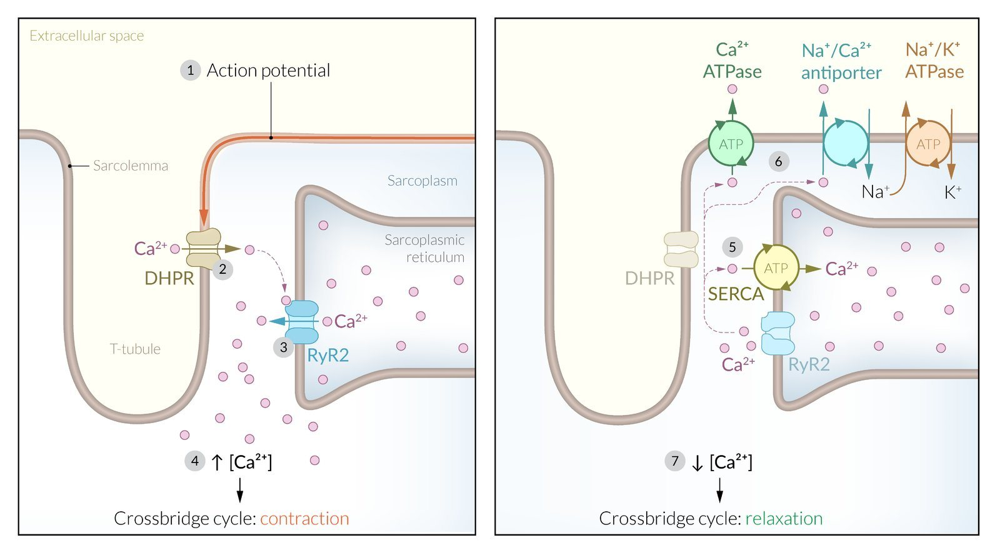
The pressure–volume loop ★ HY
The loop plots LV pressure against LV volume for one beat. There is no time axis, which is exactly why it is so useful: it shows at a glance how full the ventricle got, how much it ejected and how hard it had to push. “PV loops are a lot more fun” — and they are all over the boards.
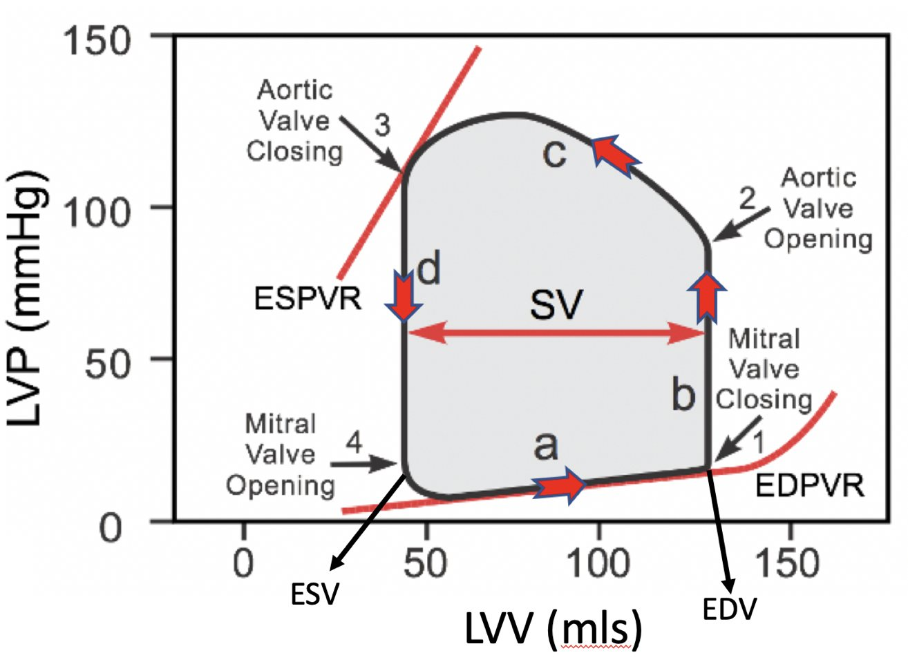
| Segment | Starts at | What is happening |
|---|---|---|
| a — filling | Mitral valve opens | Volume rises with only a small rise in pressure; the relaxed ventricle fills passively |
| b — isovolumetric contraction | Mitral valve closes (EDV) | Straight up: pressure rises, volume unchanged |
| c — ejection | Aortic valve opens | Right to left: volume leaves into the aorta, slowing toward the end |
| d — isovolumetric relaxation | Aortic valve closes (ESV) | Straight down: pressure falls, volume unchanged |
- The width of the loop is the stroke volume (EDV minus ESV), and EF is that width divided by EDV.
- The ESPVR is the maximum pressure the ventricle can generate at any volume, and its slope is contractility.
- The EDPVR is the passive filling curve; the steeper it is, the stiffer (less compliant) the ventricle.
- Board loops are not labelled. Start at mitral opening, bottom left, and go round counter-clockwise.
Preload, afterload and contractility on the loop ★ HY
Boards describe one change — a drop in contractility, a rise in afterload — and ask what the next few beats look like. Change one dial at a time.
Preload — Starling’s law
- Preload is stretch from filling; EDV and end-diastolic pressure are its indices.
- More stretch means more overlap, more cross-bridges and a bigger stroke volume. The loop widens to the right on the same ESPVR.
Afterload
- The load the ventricle must overcome before ejection can begin; aortic diastolic pressure is the main part.
- More afterload means a smaller stroke volume at any preload — more energy goes into opening the valve. The loop gets taller and narrower, and ESV rises.
Contractility (inotropy)
- Force independent of preload — it reflects intracellular calcium and how sensitive troponin C is to it.
- Best measured as the maximum rate of pressure rise during isovolumetric contraction.
- More contractility makes the ESPVR steeper; the loop extends up and to the left, so ESV falls and stroke volume rises.


| One change | Example | EDV | ESV | SV | EF | The loop looks… |
|---|---|---|---|---|---|---|
| Preload up | Transfusion, venoconstriction | ↑ | — | ↑ | ↑ or — | Wider to the right |
| Preload down | Hemorrhage, venodilators | ↓ | — | ↓ | ↓ or — | Narrower from the right |
| Afterload up | Hypertension, aortic stenosis | — (rises later) | ↑ | ↓ | ↓ | Taller and narrower |
| Afterload down | Arteriolar dilators | — | ↓ | ↑ | ↑ | Shorter and wider |
| Contractility up | Norepinephrine, dobutamine | — | ↓ | ↑ | ↑ | Steeper ESPVR, extends left |
| Contractility down | Myocardial infarction, dilated cardiomyopathy | ↑ (next beats) | ↑ | ↓ | ↓ | Flatter ESPVR, shifts right |
| Compliance down | Stiff, hypertrophied ventricle | ↓ | — | ↓ | — (preserved) | Steep EDPVR, narrower |
A surge of venous return — standing up, releasing a Valsalva — raises right ventricular preload, so the right ventricle pumps more. That fills the left atrium more, raises left ventricular preload, and the left ventricle pumps more in turn. Starling’s law keeps right and left outputs matched beat by beat with no nerve or hormone involved. At any steady state, left ventricular output equals right ventricular output.
From the cycle to the clinical presentation
Objective 1 asks you to apply the cycle to a patient. These are the pictures that keep coming back; each is worked in full in the section linked.
| Clinical picture | What changed in the cycle | What you would find |
|---|---|---|
| Long-standing hypertension | Afterload up | Taller, narrower loop; over years a thick, stiff ventricle with an S4 (Sections 2 and 28) |
| The first seconds of a myocardial infarction | Contractility down | The heart drops to a lower Starling curve; blood left behind raises EDV, which partly rescues the output (worked below) |
| Dilated cardiomyopathy (reduced ejection fraction) | Flat ESPVR | Loop shifts right with high EDV and ESV, low EF, an S3 (Section 17) |
| Stiff, hypertrophied ventricle (preserved ejection fraction) | Steep EDPVR | Less filling at a higher pressure; stroke volume falls but EF is preserved; an S4 (Section 17) |
| New atrial fibrillation | Atrial kick lost | No a wave, no S4; decompensation in aortic stenosis, mitral stenosis or hypertrophy |
| Hemorrhage | Preload down | Narrower loop, smaller stroke volume, reflex tachycardia (Section 5) |
| Aortic stenosis | Fixed outflow obstruction | Very tall loop; LV pressure far above aortic pressure in systole (Section 3) |
| Mitral regurgitation | Backward leak in systole | No true isovolumetric phases; a tall v wave on the atrial tracing (Section 3) |
| Aortic regurgitation | Backward leak in diastole | Huge EDV and a wide pulse pressure (Section 3) |


A question a second-year sent Dr. Morganelli before the USMLE: a man has ten minutes of crushing chest pain, jugular venous distension and a raised troponin. On a graph of cardiac output against EDV, what happens in the first ten seconds?
- Infarction lowers contractility, so the heart drops to the lower (failure) curve.
- A smaller stroke volume leaves more blood behind each beat, so EDV rises.
- The answer is the point on the failure curve at the higher EDV — Starling’s mechanism is already partly compensating. “Ten seconds” is there to rule out remodelling and slower hormonal compensation.
Q: What has to happen to the pressures for the aortic valve to open, and what closes it again?
It opens when LV pressure rises above aortic pressure (about 80 mm Hg). It closes when LV pressure falls below aortic pressure at the end of ejection, which produces S2 and the dicrotic notch.
Q: On a left atrial pressure tracing, what produces the a wave, the c wave and the v wave — and which one disappears in atrial fibrillation?
a is atrial contraction, c is the closed mitral valve bulging back into the atrium as the ventricle starts to contract, and v is atrial filling from the pulmonary veins against the closed valve. Atrial fibrillation removes the a wave, along with the atrial kick and any S4.
Q: EDV is 150 mL, ESV is 90 mL and the heart rate is 100 beats per minute. Calculate the stroke volume, ejection fraction and cardiac output.
Stroke volume is 60 mL (150 minus 90). Ejection fraction is 60 divided by 150, or 40% — reduced. Cardiac output is 60 mL times 100, or 6.0 L/min.
Q: A long vignette boils down to this: what does the LV pressure–volume loop look like after years of hypertension, compared with normal?
Hypertension raises afterload, which lowers the stroke volume. Pick the loop that is taller and narrower (higher pressure, higher ESV). A loop that is taller but also wider cannot be afterload alone.
Q: Dobutamine is given while preload and afterload are held constant. Which line on the PV diagram changes, and what happens to ESV and stroke volume?
The ESPVR becomes steeper because contractility rises. ESV falls and stroke volume rises; EDV does not change at first.
Q: On an electron micrograph of contracting muscle, which sarcomere band keeps the same width?
The A band, which is the length of the thick filaments. The I band and H zone narrow and the Z-discs move closer together.
Section 2 · The Normal Heart
Heart Sounds, Normal and Abnormal
Every heart sound is either a valve closing or a ventricle being filled. Once you know which event makes each sound, an extra sound stops being a mystery and becomes a clue: a ventricle that is too full, a ventricle that is too stiff, or a valve that is closing late.
S1 and S2: the valves closing
| Sound | What makes it | Timing | Worth knowing |
|---|---|---|---|
| S1 “lub” | The mitral and tricuspid (atrioventricular) valves closing | Start of systole | Marks the start of isovolumetric contraction. Best heard at the apex. |
| S2 “dub” | The aortic and pulmonic (semilunar) valves closing | Start of diastole | Aortic closure (A2) normally comes slightly before pulmonic closure (P2). Best heard at the base. |
- Opening of a normal valve is silent. A sound at the moment a valve opens means the valve is abnormal: an opening snap from a stiff mitral valve, an ejection click from a stiff aortic valve.
- Board add-on A soft S2 is a sign of severe aortic stenosis: the calcified valve barely moves, so A2 fades. Dr. Qazi made the same point from the other side — a crisp S2 makes severe aortic stenosis less likely.
- Board add-on A loud P2 suggests pulmonary hypertension.
S3 versus S4 ★ HY
Both extra sounds happen in diastole and both come from blood hitting the ventricle. The difference is why the ventricle vibrates.
S3 — a volume problem
- Dr. Qazi: “You’re trying to fill the ventricle in the context of a lot of volume.”
- Rapid early filling hits a ventricle that is already full, and the wall vibrates.
- Right after S2, in early diastole (the rapid filling phase).
- In adults it is pathologic: heart failure with reduced ejection fraction, dilated cardiomyopathy, mitral and aortic regurgitation.
- It can be normal in young people. Board add-on Also in pregnancy and in trained athletes.
- Board add-on Cadence: “Ken-tuck-y” (S1, S2, S3).
S4 — a stiffness problem
- Dr. Qazi: “You’re trying to fill the ventricle in the context of high pressure.”
- The atrial kick forces blood into a stiff, hypertrophied ventricle that cannot stretch.
- Late diastole, just before S1.
- Always pathologic: left ventricular hypertrophy from hypertension, aortic stenosis, hypertensive heart disease, ischemia. Board add-on Also hypertrophic cardiomyopathy.
- It cannot occur in atrial fibrillation — there is no atrial kick to make it.
- Board add-on Cadence: “Ten-nes-see” (S4, S1, S2).
In the recording Dr. Qazi said the S4 comes “just before S2.” It comes just before S1, in late diastole, because it is made by atrial contraction — her own slide shows the S4 tick sitting right before S1. Her mechanism, the atrial kick into a non-compliant ventricle, is correct.
Ask what the ventricle’s problem is. Too full (it cannot take any more volume) gives an S3 early in diastole. Too stiff (it cannot stretch to accept the atrial kick) gives an S4 late in diastole. The same split runs through heart failure: a dilated failing ventricle tends to have an S3, and a thick ventricle with preserved ejection fraction tends to have an S4 (Section 17).
Splitting of S2 ★ HY
Board add-on The lecture covered splitting in one table; First Aid supplies the mechanism. Breathing in lowers the pressure inside the chest, so more venous blood returns to the right heart. The right ventricle takes longer to eject that extra volume, and the pulmonic valve closes later. That is why a normal S2 splits a little more on inspiration.
| Split | What you hear | Why | Classic causes |
|---|---|---|---|
| Physiologic | A2 then P2, wider on inspiration, nearly single on expiration | Inspiration increases right ventricular filling and delays P2 | Normal |
| Wide | An exaggerated physiologic split — present in both phases, widest on inspiration | Anything that delays right ventricular emptying | Pulmonic stenosis, right bundle branch block |
| Fixed | A split that does not change with breathing | A left-to-right shunt keeps the right side volume-loaded in both phases | Atrial septal defect |
| Paradoxical | The split is heard on expiration and closes on inspiration | Aortic closure is delayed so much that P2 now comes first | Severe aortic stenosis, left bundle branch block |
Wide and fixed splitting are right-sided delays — the pulmonic valve is late. Paradoxical splitting is a left-sided delay — the aortic valve is late, so the order flips. If the cause sits on the left (aortic stenosis, left bundle branch block), expect paradoxical.
Clicks, snaps and rubs
| Sound | When | What it means | Where else |
|---|---|---|---|
| Opening snap | Early diastole, just after S2 | Mitral stenosis: a stiff, fused valve snaps open under high left atrial pressure, followed by a low diastolic rumble at the apex. The shorter the gap between S2 and the snap, the more severe the stenosis — higher atrial pressure opens the valve sooner. | Section 3 |
| Midsystolic click | Mid systole, followed by a late systolic murmur | Mitral valve prolapse: the floppy leaflet and its chordae snap taut as the leaflet billows into the atrium. Standing or Valsalva makes the click come earlier. | Section 3 |
| Ejection click Board add-on | Early systole, just after S1 | A stiff but still mobile aortic or pulmonic valve opening — classically a bicuspid aortic valve. | Section 3 |
| Pericardial friction rub Board add-on | Systole and diastole; scratchy, often three components | Inflamed pericardial layers rubbing together — acute pericarditis. Loudest leaning forward. | Section 23 |
| Tumor plop Board add-on | Early diastole | A pedunculated left atrial myxoma dropping into the mitral orifice. | Section 20 |
Q: A 68-year-old with long-standing hypertension has an extra heart sound just before S1. What is it, and why does it happen?
An S4. The atrial kick forces blood into a stiff, hypertrophied left ventricle. It would disappear if the patient developed atrial fibrillation, because the kick would be gone.
Q: A patient with a dilated cardiomyopathy and an ejection fraction of 20% has an extra sound right after S2. What does it signify?
An S3, which marks volume overload: rapid early filling of a ventricle that is already full.
Q: A 30-year-old has a split S2 that stays the same width whether she breathes in or out. What is the most likely structural lesion?
An atrial septal defect. The left-to-right shunt keeps the right side volume-loaded in both phases of breathing, so pulmonic closure is delayed by the same amount all the time — a fixed split.
Q: In an 82-year-old, S2 is single on inspiration and split on expiration. Name two causes.
This is paradoxical splitting: aortic closure is delayed past pulmonic closure. The classic causes are severe aortic stenosis and left bundle branch block.
Q: Two patients have the same diastolic rumble at the apex. In one, the opening snap follows S2 very closely; in the other, after a longer gap. Which has the more severe disease?
The patient with the shorter S2-to-snap interval. Higher left atrial pressure forces the stenotic mitral valve open earlier in diastole, so a short interval means more severe mitral stenosis.
Section 3 · The Normal Heart
Murmurs: Hemodynamics, Location and Maneuvers
A murmur is the sound of turbulent flow, and on the Wiggers diagram every valve lesion leaves one of two fingerprints: a pressure gradient across a valve that should be wide open, or extra volume in a chamber that should be emptying. Five study-guide objectives sit here, and two questions answer most of them.
Two questions solve most murmurs ★ HY
- Systolic or diastolic? In systole the aortic valve should be open and the mitral valve shut, so a systolic murmur is aortic stenosis or mitral regurgitation. In diastole it is the reverse, so a diastolic murmur is mitral stenosis or aortic regurgitation.
- Pressure or volume? A stenosis creates a gradient across the valve. A leaking valve dumps volume into the chamber behind it — a tall v wave in the left atrium (mitral regurgitation) or a dilated ventricle with a wide pulse pressure (aortic regurgitation).
Pressure overload → concentric hypertrophy
- Aortic stenosis: a fixed obstruction makes the ventricle work hard.
- The wall thickens; the chamber stays normal or small and becomes stiff, with very high pressure inside.
Volume overload → eccentric hypertrophy
- Aortic and mitral regurgitation: too much volume sits in the ventricle.
- The chamber dilates; wall thickness may look normal but the muscle is still abnormal. Mitral regurgitation also enlarges the left atrium.
Her rule: if the wall thickens, it is concentric; if the chamber enlarges, it is eccentric. Mitral stenosis is the odd one out — the obstruction sits upstream of the ventricle, so the left ventricle is protected and underfilled while the left atrium takes the strain.
The four left-sided lesions side by side ★ HY
The important valve diseases are on the left, because the left side does the cardiac output. The picture beside each lesion is its pressure tracing from the lecture — learn to name the lesion from the tracing alone.
| Lesion | Tracing | When | Hallmark on the tracing | Murmur and signs | Remodeling | Classic cause |
|---|---|---|---|---|---|---|
| Mitral stenosis |  | Diastole | LA pressure above LV pressure all through diastole | Low rumbling diastolic murmur at the apex, always with an opening snap | LA enlarged; LV spared and underfilled | Rheumatic heart disease (worldwide) |
| Aortic stenosis | 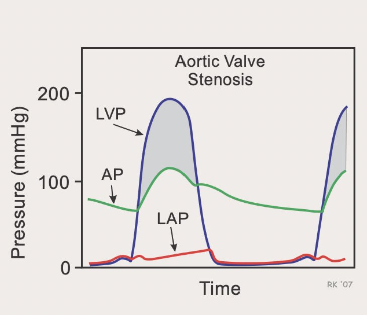 | Systole | LV pressure far above aortic pressure in systole | Crescendo–decrescendo systolic murmur at the right 2nd intercostal space; weak, delayed carotid pulses | Concentric LVH; LA pressure high | Bicuspid valve (40s–60s) or age-related calcification (70s and older) |
| Mitral regurgitation | 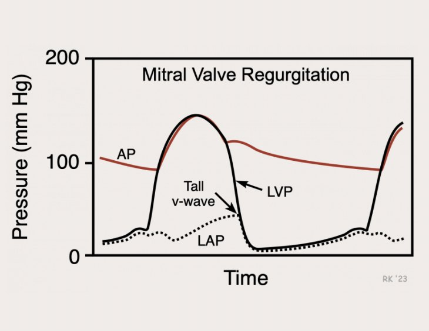 | Systole | A tall v wave on the atrial tracing | Holosystolic murmur at the apex radiating to the axilla; MVP gives a midsystolic click and late systolic murmur | LA enlarged and LV dilated (eccentric) | Mitral valve prolapse (United States) |
| Aortic regurgitation |  | Diastole | Wide pulse pressure — high systolic, low diastolic aortic pressure | Diastolic decrescendo murmur; bounding “water-hammer” pulses | LV dilated (eccentric) | Endocarditis, bicuspid valve, Marfan or a dilated aortic root |
Mitral stenosis

| Chamber | Normal | Mitral stenosis | Why |
|---|---|---|---|
| Left atrium | 10 | 25 ↑ | Obstructed outflow, plus blood left behind after each atrial contraction; the atrium enlarges |
| Left ventricle | 120/10 | 115/6 | Less blood gets in, so diastolic pressure and volume are low |
| Aorta | 120/80 | 115/80 | Roughly normal |
- The hallmark is a diastolic gradient. Normally, once the mitral valve opens, flow is smooth and the two pressures equalize (a gradient of 0–5 mm Hg). In mitral stenosis the flow is turbulent and the gradient persists.
- Restricted opening of the orifice — a normal valve opens to about 4 cm². Board add-on Severe is 1.5 cm² or less.
- Most common cause worldwide: rheumatic heart disease. It is common in South Asia, where balloon valvuloplasty is routine, and rare in the United States.
- The c wave may fade as the leaflets stiffen. Diagnosis and severity today come from echocardiography.
A diastolic rumbling murmur heard best at the apex, always with an opening snap. The vignette is a patient who grew up where rheumatic fever is common — recently emigrated from India, say — with a childhood streptococcal infection. Think mitral stenosis immediately.
- Board add-on Presystolic accentuation of the rumble comes from atrial contraction, so it disappears in atrial fibrillation.
- Board add-on The big atrium leads to atrial fibrillation and left atrial thrombus, so a stroke can be the first sign. Anticoagulate with warfarin.
- Board add-on Back-pressure causes pulmonary edema, hemoptysis, pulmonary hypertension and right heart failure. Pregnancy often unmasks it (more blood volume and a faster heart rate), and about 80% of rheumatic mitral stenosis is in women.
Aortic stenosis
40s–60s: bicuspid aortic valve
- Born with a congenitally abnormal valve; stenosis is the most common lesion it develops.
- A bicuspid valve always comes with an aortopathy, so screen for an ascending aortic aneurysm and coarctation.
70s–90s: age-related calcification
- A normal three-leaflet valve calcifies with age; pathology shows inflammatory cells and actual lamellar bone.
- Statins did not slow it. The treatment is mechanical: replace the valve (Section 25).

| Chamber | Normal | Aortic stenosis | Why |
|---|---|---|---|
| Left ventricle | 120/10 | 200/25 ↑↑ | It must generate huge pressure to push the stroke volume through a fixed obstruction, which drives concentric hypertrophy |
| Aorta | 120/80 | 110/70 | Normal or slightly low |
| Left atrium | 10 | 25 ↑ | The thick, stiff ventricle will not accept a normal volume, so blood backs up |
“Take my word on this.”
The cause is not a mitral problem. It is the hypertrophied, non-compliant ventricle — “the epitome of diastolic dysfunction” — which cannot accept a normal volume. That is a different mechanism from mitral stenosis, where the obstruction sits right at the atrial outlet.
- Why symptoms come: concentric hypertrophy is never normal in heart muscle. Afterload and preload rise until the ventricle falls off its Starling curve into heart failure.
- Exercise intolerance comes first (“I get really exhausted walking up that hill”), because cardiac output cannot rise with exercise. Then angina (a thick, oxygen-hungry muscle with limited output), exertional syncope, and finally heart failure. Board add-on First Aid’s mnemonic is SAD — syncope, angina, dyspnea on exertion.
A systolic crescendo–decrescendo murmur at the right 2nd intercostal space, with weak, delayed carotid upstrokes. Pair it with a young patient with a bicuspid valve or an 85-year-old with new exercise intolerance. As the stenosis worsens, the murmur peaks later and can muffle S2; a paradoxically split S2 can occur.
Asked whether aortic stenosis narrows the pulse pressure, Dr. Qazi said not necessarily — it may be wide, normal or narrow, and it is not the defining feature (unlike aortic regurgitation, where a wide pulse pressure is the hallmark). UWorld lists a narrow pulse pressure with pulsus parvus et tardus (a weak, late-peaking pulse) as the expected finding in severe disease. For boards, rely on parvus et tardus, a late-peaking murmur and a soft S2; a narrow pulse pressure supports them.
- Board add-on The murmur radiates to the carotids, and an S4 is common.
- Board add-on Severe stenosis on echo: jet velocity 4 m/s or more, mean gradient 40 mm Hg or more, valve area 1.0 cm² or less.
- Board add-on Severe aortic stenosis is preload-dependent: avoid nitrates and over-diuresis.
- Board add-on Heyde syndrome: aortic stenosis with gastrointestinal bleeding from angiodysplasia, because shear stress across the valve cleaves von Willebrand factor.
Mitral regurgitation and mitral valve prolapse
- Blood leaks back into the atrium through a valve that should be closed, so it happens in systole. It was the second most common lesion in Dr. Qazi’s clinic, after aortic stenosis.
- The atrium now fills from two sources — normal pulmonary venous return plus the regurgitant jet — so its volume and pressure rise and it enlarges.
- That extra volume reaches the ventricle in diastole, making mitral regurgitation a high-preload state: LVEDP rises and the ventricle dilates (eccentric hypertrophy).

“That’s what’s gonna be on the exam.”
The v wave is the atrial filling wave, and in mitral regurgitation it is swollen by the regurgitant volume. A tall v wave on a hemodynamic tracing means significant mitral regurgitation, which comes with a high LVEDP.
Primary — the valve itself (prolapse)
- The most common cause of mitral regurgitation in the United States is mitral valve prolapse.
- The leaflets are myxomatous: long, floppy and infiltrated with proteoglycans. A long leaflet billows into the atrium and leaves a gap.
- If a chord ruptures, the leaflet becomes flail: a huge gap, acute heart failure and surgery before discharge.
- Dr. Gardner: a not-uncommon disease of young women, cause unclear.
Secondary (functional) — the ventricle
- The valve is normal; the ventricle is not.
- A dilated cardiomyopathy stretches the annulus and pulls on the papillary muscles, causing a central leak.
- An inferior myocardial infarction damages the wall under the posteromedial papillary muscle and tethers the posterior leaflet down — ischemic mitral regurgitation.
A systolic murmur at the apex radiating to the axilla (and the back). Functional regurgitation is holosystolic, the same pitch throughout. Prolapse gives a midsystolic click followed by a late systolic murmur — the click is the leaflet and chordae snapping taut. As with any valve lesion, the first symptom is usually exercise intolerance.
- Board add-on Chronic severe regurgitation: S3, a soft S1, a laterally displaced point of maximal impulse, and frequent atrial fibrillation.
- Board add-on Acute mitral regurgitation (papillary muscle rupture after an inferior infarction, chordal rupture, endocarditis): pulmonary edema and shock, with a murmur that may be soft or absent because atrial pressure rises fast and equalizes with the ventricle.
- Board add-on Prolapse is associated with Marfan and Ehlers–Danlos syndromes.
Aortic regurgitation
- Less common than aortic stenosis or mitral regurgitation. In Dr. Qazi’s practice the commonest setting was bacterial endocarditis; a bicuspid valve and Marfan syndrome (with prolapse and an ascending aneurysm) were the others.
- Board add-on UWorld: the commonest cause in resource-rich countries is a bicuspid valve, and rheumatic disease in resource-limited ones. Aortic root dilation is another route (Marfan, Ehlers–Danlos, ankylosing spondylitis, syphilitic aortitis, giant cell or Takayasu arteritis). Acute regurgitation comes from aortic dissection or endocarditis.
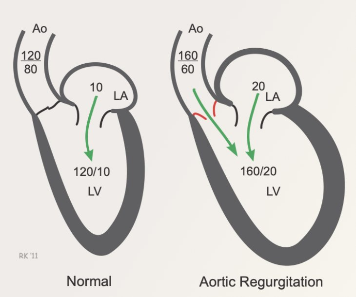
| Chamber | Normal | Aortic regurgitation | Why |
|---|---|---|---|
| Aorta | 120/80 | 160/60 | A big stroke volume raises systolic pressure. In diastole the aorta loses blood two ways — back into the ventricle and forward into the body — so diastolic pressure falls |
| Left ventricle | 120/10 | 160/20 | Extra diastolic volume raises systolic and end-diastolic pressure, though nowhere near aortic-stenosis levels |
| Left atrium | 10 | 20 ↑ | It empties into a fuller, higher-pressure ventricle |
A diastolic murmur with bounding, “water-hammer” pulses and a wide pulse pressure. The pulse bounds because forceful ejection is followed by rapid runoff.
- Board add-on The murmur is early diastolic, decrescendo, high-pitched and blowing. Valvular disease is loudest at the left sternal border with the patient sitting forward at end-expiration; root dilation at the right upper sternal border.
- Board add-on Austin Flint murmur: an apical diastolic rumble in severe regurgitation, because the jet hits the anterior mitral leaflet — it mimics mitral stenosis.
- Board add-on The hyperdynamic signs: Corrigan (water-hammer carotid pulse), de Musset (head bobbing), Quincke (nail-bed pulsation), Traube (pistol-shot femoral pulse), Duroziez (femoral to-and-fro bruit), Müller (pulsing uvula).
- Board add-on Acute regurgitation (dissection, endocarditis): sudden pulmonary edema and shock, with a soft or short murmur and no time for a wide pulse pressure to develop.
Where each murmur is heard and where it radiates ★ HY
Objective 9 asks you to use quality, location and position. Board add-on The listening map below is from First Aid; the radiation patterns from AMBOSS.
| Area | Where on the chest | Murmurs heard best there |
|---|---|---|
| Aortic | Right 2nd intercostal space | Aortic stenosis (radiates to the carotids) · flow murmurs · aortic sclerosis · aortic regurgitation from a dilated root |
| Pulmonic | Left 2nd intercostal space | Pulmonic stenosis (radiates toward the back, between the shoulder blades) · the flow murmur of an atrial septal defect |
| Left sternal border | Left 3rd–4th intercostal spaces | Aortic regurgitation (valvular) · pulmonic regurgitation · hypertrophic cardiomyopathy |
| Tricuspid | Left lower sternal border | Tricuspid regurgitation and ventricular septal defect (both holosystolic) · tricuspid stenosis |
| Mitral (apex) | 5th intercostal space, mid-clavicular line | Mitral regurgitation (radiates to the axilla) · mitral valve prolapse · mitral stenosis (heard best lying on the left side) |
| Other murmur | Timing and quality | Clue |
|---|---|---|
| Tricuspid regurgitation | Holosystolic, left lower sternal border; louder on inspiration | Giant v wave in the neck; right ventricular dilation; IV drug use with endocarditis |
| Ventricular septal defect | Holosystolic, harsh, left lower sternal border | A smaller defect is often louder (Section 26) |
| Patent ductus arteriosus | Continuous “machinery” murmur, left infraclavicular area | Prematurity, congenital rubella (Section 26) |
| Hypertrophic cardiomyopathy | Systolic crescendo–decrescendo at the left sternal border; does not radiate to the carotids | Louder with Valsalva and standing (below; Section 19) |
Maneuvers: Valsalva, squat, stand, handgrip, leg raise, breathing ★ HY
Board add-on Every maneuver changes either how much blood is in the ventricle or how hard it has to push. Work out which, then ask what that does to the lesion.
| Maneuver | What changes | Murmurs that get louder | Murmurs that get softer |
|---|---|---|---|
| Standing, or the strain phase of Valsalva | Preload ↓ — less blood in the ventricle | Hypertrophic cardiomyopathy · MVP (and the click comes earlier) | Most other murmurs, because less blood flows through the valve |
| Squatting | Preload ↑ and afterload ↑ | Most murmurs | Hypertrophic cardiomyopathy · MVP (and the click comes later) |
| Passive leg raise | Preload ↑ | Most murmurs | Hypertrophic cardiomyopathy · MVP |
| Handgrip | Afterload ↑↑ | Mitral regurgitation, aortic regurgitation, VSD — more blood is pushed backward | Aortic stenosis (smaller gradient) · hypertrophic cardiomyopathy (a fuller ventricle) |
| Inspiration | More venous return to the right heart | Right-sided murmurs | Left-sided murmurs (which are louder on expiration) |
Hypertrophic cardiomyopathy and mitral valve prolapse are the exceptions because both get worse when the ventricle is smaller: the septum and mitral leaflet obstruct a small chamber more easily, and a floppy leaflet prolapses sooner when there is less blood holding it down. So anything that shrinks the ventricle (standing, Valsalva) makes them louder, and anything that fills it (squatting, leg raise) makes them softer. To separate hypertrophic cardiomyopathy from aortic stenosis, use handgrip or the location: the cardiomyopathy murmur sits at the left sternal border and does not travel to the carotids.
From UWorld’s hemodynamics article: during the strain, higher pressure inside the chest restricts venous return, so cardiac output falls and the baroreflex speeds the heart and constricts the vessels. That drop in preload is what bedside examiners use to bring out hypertrophic cardiomyopathy and prolapse. On release, venous return surges, the blood pressure overshoots, and a burst of vagal tone follows — the same burst that can stop a supraventricular tachycardia.
Innocent versus pathologic murmurs
Board add-on From AMBOSS’s cardiovascular examination article.
| Feature | Functional (innocent) | Pathologic |
|---|---|---|
| Cause | More or faster flow across normal valves — children, pregnancy, fever, anemia, thyrotoxicosis, exercise | A structural defect: valve disease or a congenital lesion |
| Loudness | Soft, grade below 3 of 6, no thrill | Typically grade 3 or louder; a thrill may be felt |
| Timing | Midsystolic (or a continuous venous hum) | Systolic, diastolic or continuous |
| Position | Changes with position, may disappear | Rarely disappears |
- A diastolic murmur is almost always pathologic.
- The commonest innocent murmur in children is the Still murmur: a soft midsystolic murmur at the left lower sternal border, louder lying down. The venous hum is continuous, heard above or below the right clavicle, and softens or vanishes when the child lies flat, flexes the head, or the jugular vein is pressed.
Risk factors and the causes behind each murmur
Dr. Gardner’s two-line summary from Cardiac Pathology: aortic stenosis is a bicuspid valve or ageing; aortic insufficiency is an expanding aortic root. Mitral stenosis is rheumatic heart disease; mitral insufficiency is myxomatous degeneration (prolapse) or heart failure.
| Lesion | Causes (Gardner, slide 71) |
|---|---|
| Mitral stenosis | Post-inflammatory scarring — rheumatic heart disease |
| Aortic stenosis | Rheumatic scarring · age-related calcific stenosis · calcification of a congenitally bicuspid valve |
| Mitral regurgitation | Leaflets: rheumatic, infective endocarditis, prolapse, fen-phen fibrosis · tensor apparatus: papillary muscle rupture or dysfunction, chordal rupture · cavity or annulus: a dilated ventricle (myocarditis, dilated cardiomyopathy), a calcified mitral ring |
| Aortic regurgitation | Valve: rheumatic, infective endocarditis · aortic root: degenerative dilation, syphilitic aortitis, ankylosing spondylitis, rheumatoid arthritis, Marfan syndrome |
- Group A streptococcal pharyngitis in a child or teenager.
- Molecular mimicry: antibodies and T cells against the streptococcal M protein cross-react with heart tissue in about 3%.
- Acute rheumatic fever: polyarthritis, pancarditis, subcutaneous nodules, erythema marginatum and chorea. Board add-on “J♥NES” — Joints, carditis, Nodules, Erythema marginatum, Sydenham chorea.
- Healing is fibrosis. The attacked valve scars, and the result decades later is mitral stenosis with fused commissures — the “fish-mouth” valve.
- Histology: Aschoff bodies (T cells, plasma cells and macrophages); the activated macrophages with wavy “caterpillar” chromatin are Anitschkow cells.
It is now rare in the West, largely because strep throats are treated promptly.
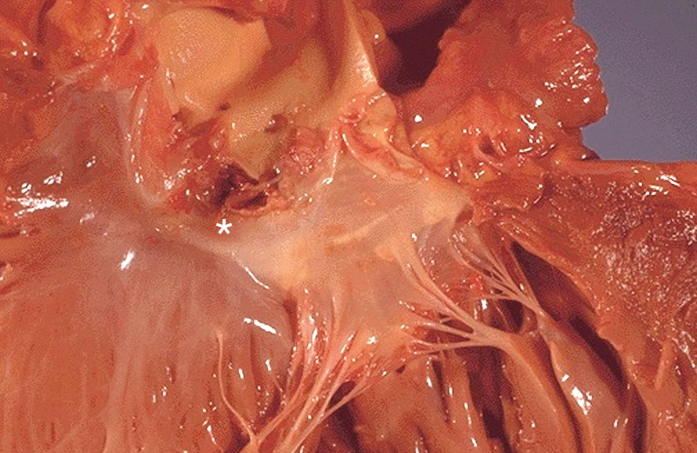

Q: A 34-year-old woman who emigrated from Pakistan has exertional breathlessness and a low-pitched diastolic murmur at the apex, preceded by a sharp early diastolic sound. What will the left atrial and left ventricular pressure tracings show?
This is rheumatic mitral stenosis with an opening snap. Left atrial pressure stays above left ventricular diastolic pressure throughout diastole — a persistent diastolic gradient. Atrial pressure is high and the atrium enlarged; ventricular diastolic pressure is low.
Q: A pulmonary capillary wedge tracing (a stand-in for left atrial pressure) shows a very tall v wave. Which lesion, and why?
Mitral regurgitation. During systole the atrium fills from the pulmonary veins and from the regurgitant jet at the same time, so the filling wave towers.
Q: A tall 25-year-old with long fingers has a blood pressure of 160/50, bounding pulses and a diastolic murmur. Explain the low diastolic pressure.
Aortic regurgitation from a Marfan aortic root. In diastole the aorta loses blood two ways — backward into the ventricle and forward to the body — so diastolic pressure falls, while the large stroke volume raises systolic pressure. The result is a wide pulse pressure.
Q: A 19-year-old athlete has a systolic murmur at the left sternal border that gets louder when he stands from a squat and softer with sustained handgrip. What is the diagnosis?
Hypertrophic cardiomyopathy. Standing lowers preload and shrinks the ventricle, which worsens the outflow obstruction. Handgrip raises afterload and fills the ventricle, which relieves it. Aortic stenosis would also soften with handgrip, but it would not get louder on standing and would radiate to the carotids.
Q: A thin 30-year-old woman has a midsystolic click followed by a late systolic murmur at the apex. What happens to the click when she stands up, and what is the valve pathology?
Standing lowers preload, so the leaflet prolapses sooner: the click moves earlier and the murmur lengthens. The pathology is myxomatous degeneration — long, floppy leaflets — the commonest cause of primary mitral regurgitation in the United States.
Q: An 84-year-old has new exertional fatigue and a harsh crescendo–decrescendo murmur at the right 2nd intercostal space with weak, delayed carotid pulses. Why is his left atrial pressure high when his mitral valve is normal?
This is calcific aortic stenosis. The hypertrophied left ventricle is stiff and will not accept a normal volume in diastole, so blood backs up into the atrium. Dr. Qazi: left atrial pressure is always high in aortic stenosis.
Q: Which two lesions produce a diastolic murmur, and which hemodynamic sign separates them?
Mitral stenosis and aortic regurgitation. Mitral stenosis has a left atrial-to-ventricular diastolic gradient (opening snap, rumble). Aortic regurgitation has a wide pulse pressure with bounding pulses.
Section 4 · The Normal Heart
Exercise Physiology, Cardioprotection and Prevention
Most coronary disease comes from three habits — poor diet, physical inactivity and smoking — and Dr. Qazi’s argument was that exercise should be prescribed like a drug, because each step up in fitness lowers mortality about as much as a cardiac medicine does. This section covers how the circulation responds to exercise, why that protects the heart, how cardiac rehabilitation works, and the diets with outcome data behind them.
Why exercise protects the heart ★ HY
- Cardiovascular disease is the leading cause of death worldwide.
- An estimated 75–90% of coronary disease is explained by modifiable risk factors: poor diet, physical inactivity and cigarette smoking.
- Physical inactivity is an independent risk factor, linked to about 12% of all deaths in the United States.
- Regular moderate activity lowers all-cause mortality by about 25% in patients with coronary disease and by 20–30% in the general population.
| Protective effect | How |
|---|---|
| Anti-inflammatory | Lower C-reactive protein |
| Antithrombotic | Less platelet aggregation, more fibrinolysis |
| Antiarrhythmic | Better autonomic balance: more vagal tone, less sympathetic activity |
| Antiatherogenic | Better endothelial function from higher flow and shear stress, which raises nitric oxide production |
| Risk factors | Lower total cholesterol, LDL and triglycerides · higher HDL · lower blood pressure · better insulin sensitivity · weight loss |
| Anti-ischemic | Better myocardial perfusion, a higher ischemic threshold, ischemic preconditioning |
| Psychological | Less depression and stress, more social support |
- Too much of a good thing: inflammatory markers are actually high straight after a marathon, and ultra-endurance runners commonly develop atrial fibrillation. The protection belongs to regular, moderate exercise.
- The lipid change she sees most in clinic is a clear rise in HDL when sedentary patients start exercising.
- In a trial of depressed patients on one antidepressant, adding regular exercise worked about as well as adding a second antidepressant.
The cardiorespiratory response to exercise ★ HY
| Term | Meaning |
|---|---|
| Age-predicted maximal heart rate | 220 minus age (give or take 10–15 beats) |
| Heart-rate reserve | Peak heart rate minus resting heart rate |
| VO₂max versus VO₂peak | Oxygen use at true maximal effort versus at the point symptoms stop the test; VO₂peak is lower in most sedentary adults |
| MET | The energy of resting metabolism, 1 MET ≈ 3.5 mL O₂/kg/min |
| MET-hours | Intensity × time × frequency — walking at 3 METs for 1 hour on 3 days is 9 MET-hours a week |
Heart rate
rises linearly, then plateaus
Climbs in a straight line with workload, and at any steady submaximal load levels off within 2–3 minutes. The maximum is about 220 minus age.
Stroke volume
rises early, then flattens
Rises along a curve and is nearly maximal by about 50% of VO₂max. After that, cardiac output rises mainly through heart rate.
Oxygen extraction
about three-fold
Working muscle pulls about three times as much oxygen out of each litre of blood at peak as at rest. Muscle’s share of cardiac output goes from 15–20% at rest to 85–90%.
Blood pressure
systolic up, diastolic flat
Systolic pressure rises about 8–12 mm Hg per MET, to roughly 190 in men and 170 in women at peak. Diastolic pressure stays the same or falls slightly.
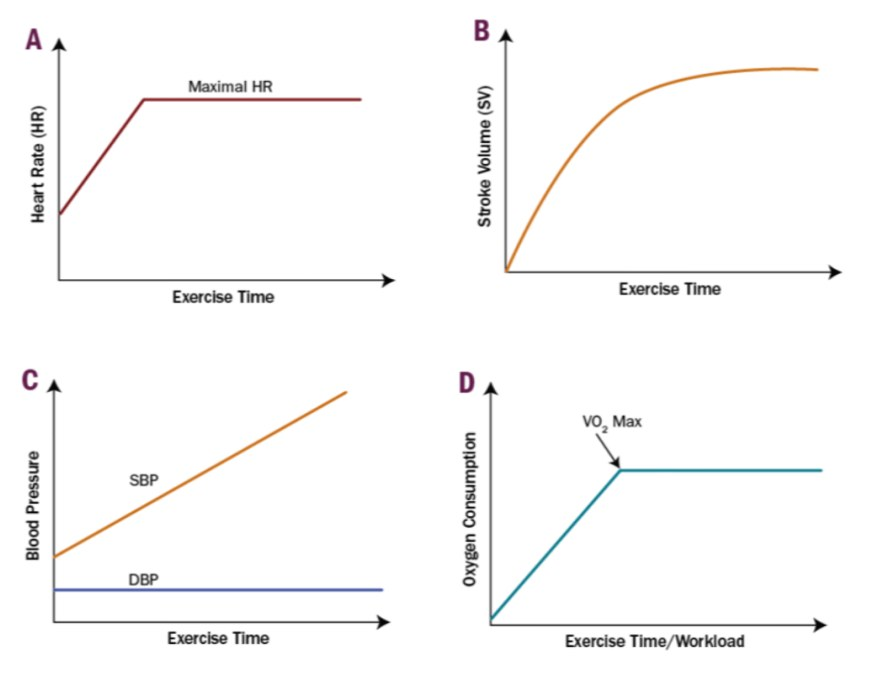
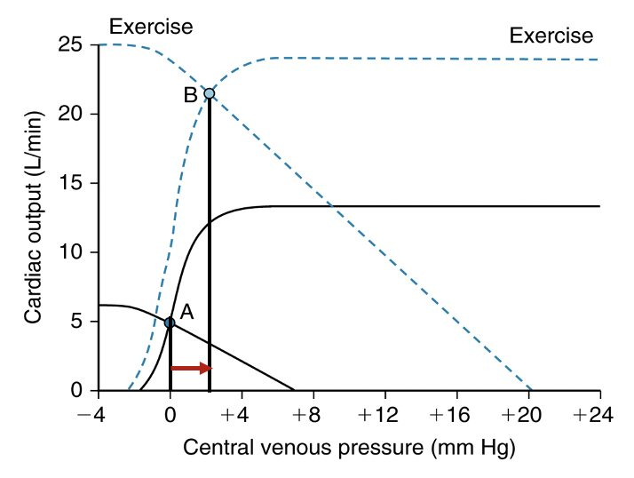
- Arterioles in working muscle, skin and heart dilate, so total peripheral resistance falls sharply. The extra output flows through those open beds instead of raising diastolic pressure. Flow to the brain stays constant; flow to the gut and kidneys falls.
- Dr. Morganelli’s point: a high output is only possible if venous return keeps up. Sympathetic tone stiffens the veins, which pushes blood out of the venous reservoir and raises the pressure driving it back to the heart (Section 5).
- Board add-on The Fick principle ties it together: oxygen uptake equals cardiac output times the arterial–venous oxygen difference, and exercise raises both.
- Board add-on On an exercise test, a fall in systolic pressure as the workload rises suggests severe ischemia or left ventricular dysfunction.
Deconditioned
- High resting heart rate.
- The rate shoots up as soon as the treadmill starts and stays high long after stopping.
Conditioned (a marathoner)
- Slow resting heart rate.
- The rate stays low for much of the test and drops back to baseline quickly afterward.
VO₂peak is measured by cardiopulmonary exercise testing, mostly in heart failure with reduced ejection fraction to judge transplant candidacy — a falling VO₂peak means the patient is getting closer to transplant.
Fitness, METs and mortality
- Cardiorespiratory fitness is a powerful independent predictor of mortality in cardiovascular disease.
- In coronary disease, each 1-MET increase in exercise capacity lowers mortality by 8–35% — comparable to statins, beta-blockers, low-dose aspirin and ACE inhibitors after a heart attack. A meta-analysis of 33 studies gave a relative risk of 0.87 per MET.
- Men who went from unfit to fit over about five years roughly halved their mortality. Getting fit later still counts.
- The least-fit, highest-risk patients (below about 5 METs) should be referred to structured cardiac rehabilitation.


| Class of recommendation | 2019 ACC/AHA primary prevention — physical activity |
|---|---|
| I | Counsel adults at every visit to be physically active |
| I | At least 150 minutes a week of moderate or 75 minutes a week of vigorous aerobic activity, or a combination |
| IIa | If they cannot reach that, some moderate or vigorous activity still helps |
| IIb | Cutting sedentary time may be reasonable |
Dr. Qazi asked the class to find ways to talk about exercise without the patient feeling fat-shamed — patients often hear it as a comment on their weight.
Cardiac rehabilitation: who, when and the phases ★ HY
Cardiac rehabilitation is the secondary-prevention tier of the prevention pyramid. Its core parts are assessment, exercise training, activity counselling, nutrition counselling, management of weight, blood pressure, lipids and diabetes, tobacco cessation, and psychosocial care.
- Phase I — inpatient. Physical therapy and education straight after the event or procedure. Dr. Qazi: now mostly meaningless, because a STEMI gets emergency PCI and goes home in a day or two, so patients go straight to phase II.
- Phase II — outpatient and supervised. 36 sessions, usually three a week, ECG-monitored, over 8–12 weeks, in a staffed facility. Continuous ECG monitoring is its defining feature. Medicare pays for the 36 sessions.
- Phases III and IV — maintenance. Independent, unmonitored continuation of what was learned in phase II. Not covered by insurance — “like an expensive gym membership.”
| Indication | Class |
|---|---|
| Acute coronary syndrome in the past 12 months | I |
| After CABG or PCI | I |
| Chronic stable angina | I |
| Peripheral artery disease (walking programme is first-line for claudication) | I |
| Chronic heart failure | IIa — Medicare covers it only with an ejection fraction of 35% or less |
| Valve repair or replacement, LVAD, heart or heart–lung transplant | Listed |
When to start
timing
1–2 weeks after discharge for a non-surgical event; 2–6 weeks after CABG or other major surgery (at least 4 weeks after a sternotomy in practice).
The intake
before the first session
History, examination and a symptom-limited exercise test to set fitness and maximal heart rate and watch for ischemia or arrhythmia — on the patient’s usual medications, so the prescription matches how they will exercise.
AHA risk classes
A to D
A apparently healthy · B stable disease, low risk · C moderate-to-high risk during exercise · D unstable, so restrict activity. Most rehab patients are B or C.
Underused
only 30–40% enrol
Older patients, women, minorities, the uninsured and those with depression miss out most. The strongest lever you control is the strength of the physician’s endorsement — put “rehab referral done?” in your post-MI template.
| Evidence | Who | Result |
|---|---|---|
| Meta-analysis of 47 trials | After MI, CABG or PCI, or with angina | Total mortality down 13%, cardiovascular mortality down 26%; fewer admissions, less angina and depression |
| HF-ACTION | Heart failure with reduced ejection fraction | The seminal heart-failure rehab trial: 11% fewer deaths or hospitalizations, 15% fewer cardiovascular deaths or heart-failure admissions, better quality of life |
| REHAB-HF | Frail older adults after a heart-failure admission | A low-intensity programme (strength, balance, mobility, endurance) improved physical function, quality of life and mood |
Writing the exercise prescription
| FITT | Prescription |
|---|---|
| Frequency | At least 3 times a week, preferably most days |
| Intensity | 40–80% of heart-rate reserve or of VO₂ reserve · 65–80% of peak heart rate · RPE 11–16 |
| Time | 5–10 minutes warm-up, 30–60 minutes aerobic, 5–10 minutes cool-down |
| Type | Walking, jogging, cycling, rowing, elliptical — plus resistance, flexibility, and balance work in older patients |
- The threshold intensity that improves fitness in heart disease is about 45% of oxygen-uptake reserve, roughly 70% of peak heart rate; progress toward 50–80%.
- If the patient gets angina, set the target heart rate about 10 beats below the ischemic threshold — the rate at which angina appeared on the exercise test.
- Board add-on The heart-rate-reserve (Karvonen) method: target = resting rate + chosen percentage × (peak rate − resting rate).
- Dr. Qazi’s practical sweet spot is about 65–70% of maximal heart rate. Resistance training is never wrong and is the strongest defence against frailty.
Diet and lifestyle in primary prevention
The 2019 ACC/AHA primary-prevention guideline is team-based and accounts for social determinants of health: assess ASCVD risk, keep blood pressure below 130/80, reach 150 minutes of moderate activity a week, use aspirin only in select high-risk patients, treat type 2 diabetes with diet, exercise and metformin first, stop tobacco — and eat well.
| Class | Nutrition recommendation |
|---|---|
| I | Emphasize vegetables, fruit, legumes, nuts, whole grains and fish |
| IIa | Replace saturated fat with mono- and polyunsaturated fat |
| IIa | Less dietary cholesterol and sodium |
| IIa | Minimize processed meat, refined carbohydrate and sweetened drinks |
| III: harm | Avoid trans fats |
Mediterranean diet — PREDIMED
- Daily grains, fruit, vegetables, legumes, nuts and olive oil; fish and poultry a few times a week; red meat a few times a month.
- PREDIMED (7,447 high-risk adults): adding extra-virgin olive oil or nuts cut heart attack, stroke and cardiovascular death by about 30% (hazard ratio 0.70) compared with a low-fat diet. Re-analysed in 2018; the benefit held.
- The only diet with randomized-trial evidence of fewer cardiovascular events.
Sodium and DASH
- Higher sodium intake: stroke up 24%, fatal coronary disease up 32%. Cutting sodium lowers systolic pressure by about 3.4 mm Hg.
- DASH-Sodium: the DASH diet lowers systolic pressure at every sodium level, and lowering sodium lowers it further — the effects add up.
- Target below 2,400 mg of sodium a day, with further benefit below 1,500 mg.
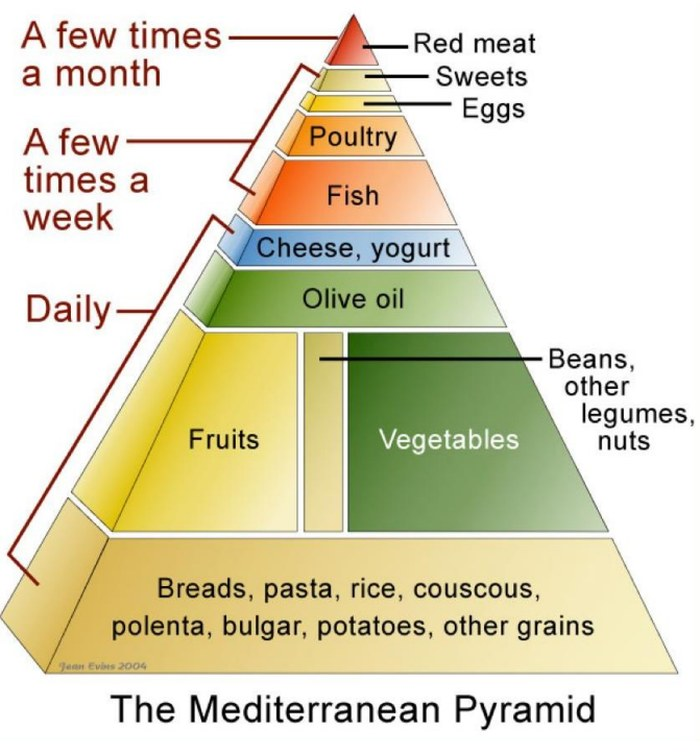

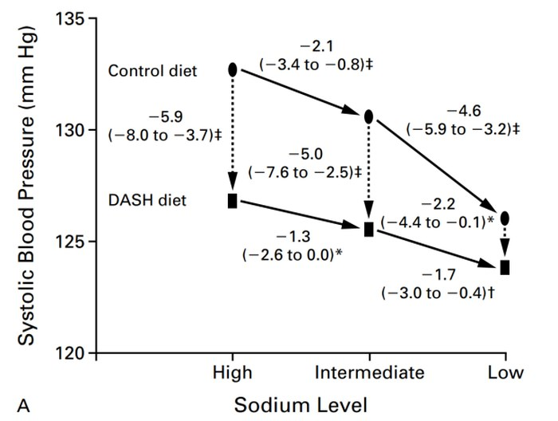
- Eggs are fine. Only a small share of dietary cholesterol shows up in the blood; the real culprits are saturated fat and refined carbohydrate.
- Mediterranean in practice: plenty of carbohydrate as long as it is complex; fat mainly from olive oil or nuts; protein mainly from seafood.
- Ornish and Esselstyn (fully plant-based, no oils) showed plaque regression in small series but are almost impossible to sustain.
Q: During a treadmill test a healthy 50-year-old goes from 3 to 9 METs. Predict what happens to his systolic and diastolic blood pressure.
Systolic pressure rises about 8–12 mm Hg per MET, so roughly 50–70 mm Hg over 6 METs. Diastolic pressure stays the same or falls slightly, because arterioles in working muscle dilate and total peripheral resistance drops.
Q: At about what fraction of VO₂max does stroke volume plateau, and what drives cardiac output higher after that?
About 50% of VO₂max. After that, cardiac output rises mainly through heart rate.
Q: Describe phase II cardiac rehabilitation, and say when a patient can start after an uncomplicated stent for unstable angina and after bypass surgery.
Outpatient, supervised, individualized exercise and risk-factor work: 36 sessions, about three a week, ECG-monitored, over 8–12 weeks. Start 1–2 weeks after discharge for the stent and 2–6 weeks after bypass surgery.
Q: Which cardiac rehabilitation indication is class IIa rather than class I?
Chronic heart failure. Acute coronary syndrome within 12 months, bypass or stent, stable angina and peripheral artery disease are all class I.
Q: On the intake exercise test, angina appears at a heart rate of 120. Where should the training heart rate be set?
About 10 beats below the ischemic threshold, so roughly 110 beats per minute.
Q: Which diet has randomized-trial evidence of fewer cardiovascular events, and what was the effect size?
The Mediterranean diet, in PREDIMED: about 30% fewer heart attacks, strokes and cardiovascular deaths (hazard ratio 0.70) with extra-virgin olive oil or nuts.
Section 5 · The Normal Heart
Control of the Circulation: Receptors, Signals, Pressure and Flow
No study-guide objective names this material, but every drug and every compensation later in the block depends on it. Dr. Scully’s framing: every cardiovascular drug works by turning one physiologic dial, and boards ask “what changes in the body when this drug is given?” Dr. Morganelli added the pieces he does not usually teach in year one — venous return and the Guyton curves — because you need them for IV fluids and heart failure.
The autonomic receptors of the heart and vessels ★ HY
| Receptor | Where | What it does | G protein |
|---|---|---|---|
| α1 | Vascular smooth muscle (also the pupil dilator) | Contraction — vasoconstriction, so resistance rises | Gq |
| α2 | Presynaptic nerve terminals · brainstem | Inhibits transmitter release and lowers sympathetic outflow — the brake | Gi |
| β1 | Heart · JG cells of the kidney | Faster rate, stronger contraction, faster conduction · more renin | Gs |
| β2 | Bronchi · vessels of skeletal muscle | Bronchodilation · vasodilation | Gs |
| M2 | SA and AV nodes | Slower rate and slower AV conduction | Gi |
| M3 | Smooth muscle (pupillary constrictor), glands | Contraction, secretion | Gq |
| NN | Every autonomic ganglion, sympathetic and parasympathetic, plus the adrenal medulla | Depolarizes the postganglionic neuron | Ion channel |
- Sympathetic “fight or flight” uses norepinephrine from nerve endings and epinephrine from the adrenal medulla.
- Because β1 sits on the JG cells, β1 stimulation raises renin and beta-blockers lower it.
- The peripheral vessels have no parasympathetic supply. Their tone comes only from sympathetic α1 signalling, kept “a little on” like a dimmer switch so there is always room to dial it back.
- Nicotine looks like “both” — a racing heart and a busy gut — because NN receptors sit in both branches’ ganglia. That is also why nicotine toxicity is unpredictable.
- Muscarinic receptors are cholinergic receptors: a muscarinic effect is produced by cholinergic drugs and blocked by atropine.
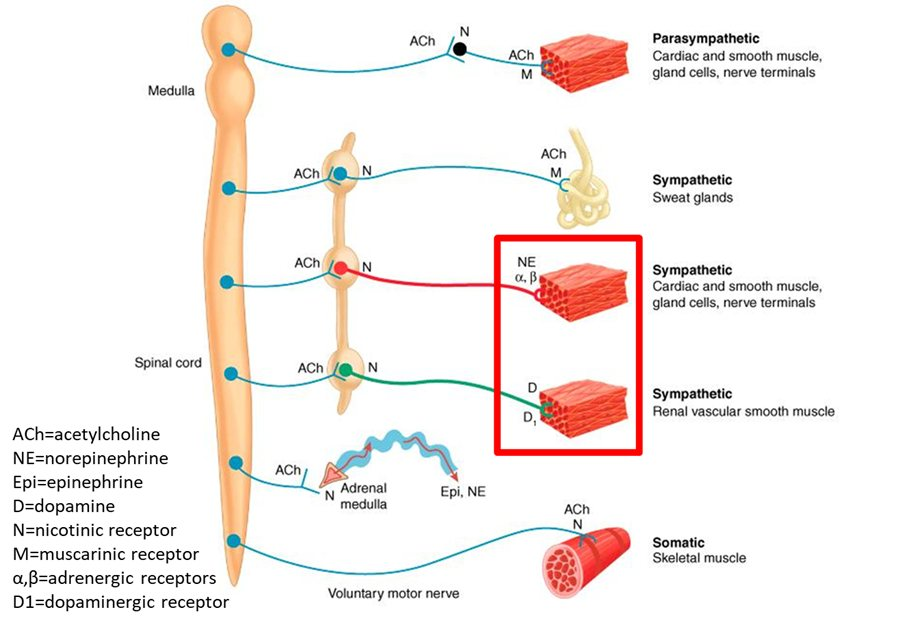
G-protein signalling: odd Gq, even Gi, betas are Gs
For muscarinic and alpha receptors, odd numbers are Gq and even numbers are Gi: M1, M3 and α1 use Gq; M2 and α2 use Gi. “Betas are BS” — every beta receptor breaks the rule and uses Gs.
| Pathway | Receptors | Cascade | Result |
|---|---|---|---|
| Gq | M1, M3, α1 | Phospholipase C splits a membrane lipid into IP3 (releases stored calcium) and DAG (activates protein kinase C) | Smooth muscle contraction |
| Gi | M2, α2 | Inhibits adenylyl cyclase, so cAMP falls; the βγ subunit also blocks presynaptic calcium entry | Slower heart (M2) · less transmitter release (α2) |
| Gs | All β | Activates adenylyl cyclase, so cAMP rises and PKA is switched on | Heart: faster and stronger · smooth muscle: relaxation |
In the heart: one enzyme, two hands on it
- β1 (Gs) and M2 (Gi) both act on adenylyl cyclase.
- More cAMP lets PKA phosphorylate the L-type calcium channel and phospholamban, giving faster, stronger beats.
- The net heart rate is the integrated cAMP signal.
In vascular smooth muscle: calcium is the currency
- Contract: α1 and Gq raise calcium, which switches MLCK on.
- Relax through cAMP: β2 and Gs activate PKA, which inhibits MLCK.
- Relax through cGMP: nitric oxide activates guanylyl cyclase; cGMP and PKG switch on myosin light-chain phosphatase. This is how nitrates work.

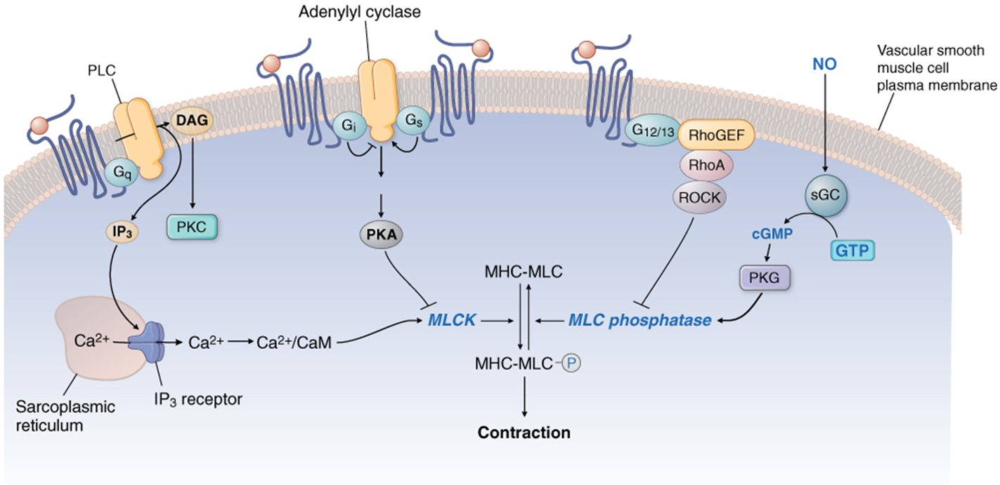
Pacemaker and fast-response action potentials ★ HY
Dr. Morganelli: “You’ll see this on the boards, I guarantee it.” These are the currents the antiarrhythmic drugs target (Section 10), and the waves you read on the ECG (Section 6).
- The conduction path: SA node, both atria, AV node, bundle of His, bundle branches, Purkinje fibres, ventricles.
- The atria are electrically insulated from the ventricles; the only way through is the AV node, which delays the impulse about 0.1 s so the ventricles can finish filling.
- Conduction is fastest in the Purkinje fibres (about 4 m/s) and slowest in the AV node (about 0.05 m/s).
- The atria have a short plateau because they add only the last of the filling; the ventricles, especially the left, have a long one.
Pacemaker (slow-response) — SA and AV node
- Phase 4: the funny current, a slow inward sodium current that drifts the cell up from about −60 mV. Its slope sets the heart rate. It is “funny” because hyperpolarization switches it on.
- Phase 0: the upstroke is calcium through L-type channels, at a threshold near −40 mV.
- Phase 3: potassium out.
- No true resting potential.
Fast-response — atria, ventricles, Purkinje
- Phase 0: fast sodium channels open.
- Phase 1: a brief potassium current out — the notch.
- Phase 2 (plateau): calcium in, balanced by potassium out. This calcium is the trigger for contraction.
- Phase 3: potassium out.
- Phase 4: stable resting potential near −90 mV.
Myocyte upstroke is sodium. Nodal upstroke is calcium. Repolarization in both is potassium. So a calcium channel blocker slows the SA node and AV conduction (a longer PR interval) but spares the myocyte upstroke.
| Input | Transmitter and receptor | Effect on the pacemaker | Result |
|---|---|---|---|
| Sympathetic | NE on β1 | More funny current and calcium current, so a steeper phase 4 | Faster rate, faster conduction, stronger contraction |
| Parasympathetic (vagus) | ACh on M2 | Less funny and calcium current (flatter phase 4) and more potassium conductance, so the cell starts further from threshold | Slower rate, slower AV conduction |
- With no autonomic input at all — a transplanted, denervated heart — the rate is about 100 per minute. Resting vagal tone normally holds it lower.
- Overdrive suppression: the fastest SA cells reach threshold first and suppress slower backup pacemakers.
- Absolute (effective) refractory period: from phase 0 to the middle of phase 3, while the sodium channels are inactivated. It prevents summation and tetany and guarantees time to fill.
- Relative refractory period: the end of phase 3, when a stronger-than-normal stimulus can fire the cell. A premature beat landing here can start an arrhythmia.

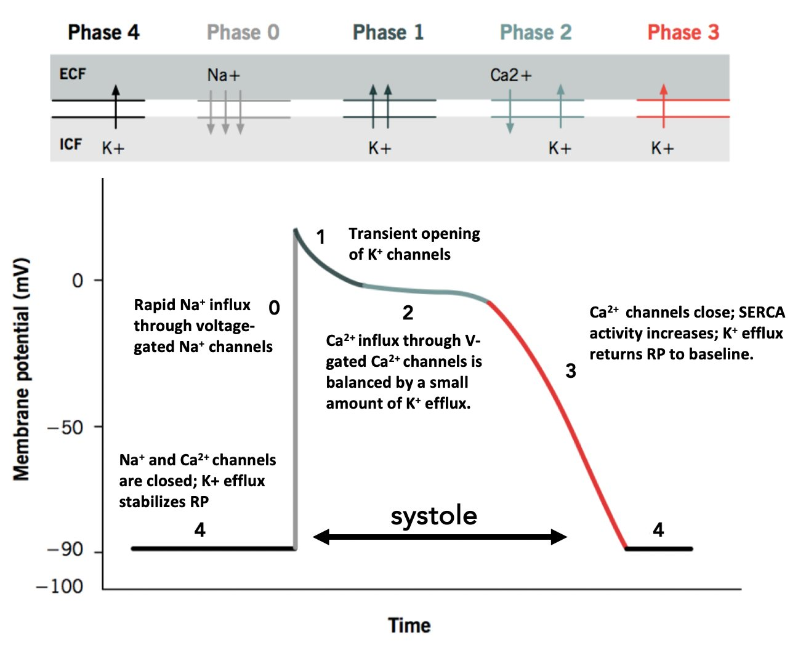


MAP = cardiac output × total peripheral resistance ★ HY
MAP = CO × TPR. The body adjusts cardiac output and resistance to hold MAP where it is — MAP itself is the dependent variable. When one tissue dilates to get more flow, total resistance falls, so cardiac output must rise to hold the pressure. If resistance halves during exercise, output has to double.
| Dial | Turned up by | Turned down by |
|---|---|---|
| Heart rate | Antimuscarinics · β agonists and catecholamines · PDE3 inhibitors | Muscarinic agonists · beta-blockers · calcium channel blockers |
| Preload — venous tone | Sympathetic tone | Nitric oxide (nitrates, nitroprusside) |
| Preload — blood volume | Thirst, fluids | Diuretics · RAAS blockade |
| Contractility | Sympathetic tone and catecholamines on β1 | Beta-blockers · calcium channel blockers |
| Resistance | α1 nerves · circulating catecholamines · angiotensin II · calcium channels | α1 blockers · central α2 agonists · nitric oxide · RAAS blockers · calcium channel blockers |
- The ANS is the fast responder; the kidney’s sodium and water handling is the long-term answer. The kidney’s role is so large that hypertension can be transplanted with a kidney.
- Angiotensin II acts on the adrenal cortex (aldosterone), the proximal tubule (more sodium reabsorption), the efferent arteriole (maintains filtration), the hypothalamus (thirst and ADH) and the heart (remodelling).
- ACE is also kininase II, the enzyme that breaks down bradykinin — the reason ACE inhibitors cause cough and angioedema (Section 29).
- In heart failure, lowering afterload means the failing ventricle can eject a larger stroke volume for the same contractility. These same dials give the mortality benefits in Section 18.
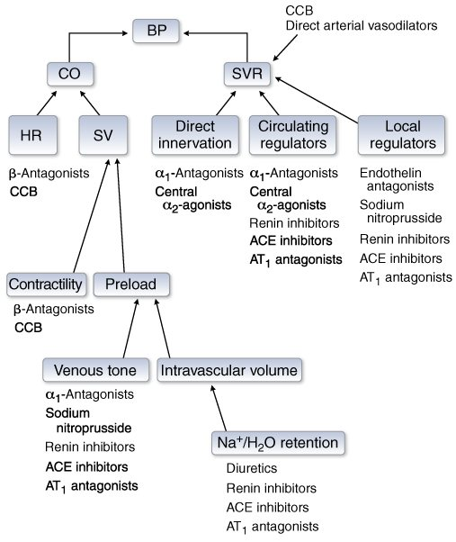

Flow, resistance and Poiseuille’s law
- Flow = pressure difference ÷ resistance. For the whole circulation the driving pressure is MAP, since venous pressure is close to zero.
- Continuity: flow = cross-sectional area × velocity. Where the total area is largest, velocity is lowest — so the capillary network has the slowest flow in the body (about 0.03 cm/s), which gives time for exchange. The trap: a single capillary is tiny, but the question is about the whole network.
- Poiseuille: resistance = 8 × viscosity × length ÷ (π × radius⁴). Radius dominates: double it and flow rises 16-fold; halve it and flow falls to one-sixteenth.
- Viscosity is mostly hematocrit — it rises with dehydration, polycythemia and blood doping.
- Series resistances add, so adding one raises the total. Parallel resistances add as reciprocals, so adding a branch lowers the total — which is why a capillary bed offers little resistance even though each capillary is very resistant. Dr. Morganelli saw a board question that made you calculate one.
- Laminar flow is silent and efficient. Turbulent flow loses energy and makes noise — murmurs and bruits (Section 3).
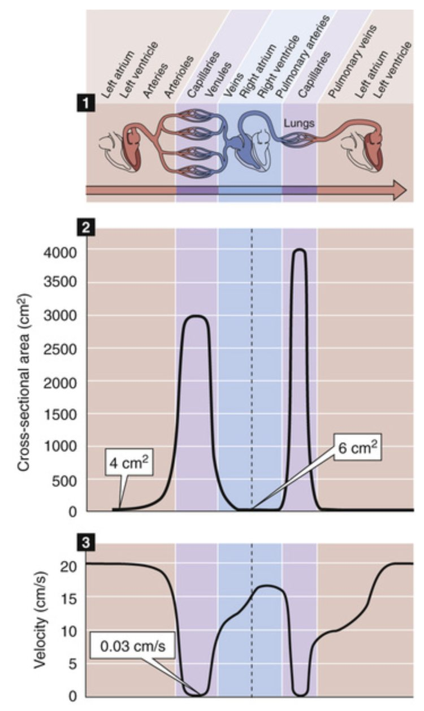
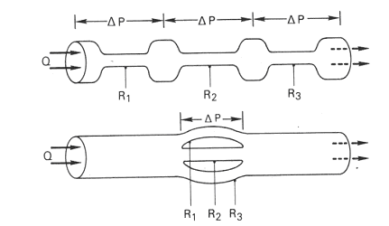
Venous return, mean systemic filling pressure and the Guyton curves
New this year, and needed for IV fluids and for treating heart failure.
- About 70% of the blood sits in the veins — a reservoir that can be mobilized in hemorrhage and shock. Veins are highly compliant: they accept whatever volume they are given.
- Venous return = (peripheral venous pressure − right atrial pressure) ÷ venous resistance. The gradient is only about 8 mm Hg to 0, so small changes in either pressure swing venous return a lot. Right atrial pressure (measured clinically as CVP) opposes return.
- Mean systemic filling pressure is the pressure throughout the circulation when flow stops — about 7–8 mm Hg. It is the main upstream push for venous return.
- Dr. Morganelli’s view on the chicken-and-egg question: the energy comes from the heart, so cardiac output drives venous return — and at steady state the two are equal.
Unstressed volume
- Blood that fills the veins up to the point their walls start to stretch — about 70% of venous volume at rest.
- Makes no pressure. Like the first air pumped into a flat air mattress.
Stressed volume
- Blood above the unstressed volume. It stretches the walls, makes pressure, and is the volume that flows.
- It sets the mean systemic filling pressure. It depends on total blood volume and on how stiff the veins are.
| Scenario | Stressed volume | Filling pressure − atrial pressure | Venous return |
|---|---|---|---|
| Normal | About 30% of venous volume | 8 − 0 | Normal |
| Transfusion or fluid load | ↑ (mostly stressed) | 12 − 1 | ↑, and the kidneys then excrete the excess |
| More venous tone (sympathetic) | ↑ — stiffer veins shift blood from unstressed to stressed | 10 − 1 | ↑ — how venous return keeps up with output in exercise |
| Hemorrhage | ↓ (both volumes fall) | Falls | ↓ |
| Nitrates plus sildenafil | ↓↓ — veins suddenly far more compliant | Collapses | ↓↓, and blood pressure crashes — never combine them |
The vascular function curve
- Right atrial pressure plotted against cardiac output, with a pump setting the flow.
- When output is zero, atrial pressure equals the mean systemic filling pressure (about 8) — the y-intercept.
- As output rises, atrial pressure falls, widening the gradient for return. Below about 0 the vena cava collapses and output cannot rise further.
- More volume or stiffer veins shift the curve right; hemorrhage or more compliant veins shift it left.
The cardiac function curve and Guyton’s crossing
- Starling’s curve with heart rate built in: output rises as right atrial pressure rises.
- Better contractility moves it up and left; failure moves it down and right.
- Where the two curves cross is the steady state, where output equals venous return — normally about 5 L/min at an atrial pressure near 2.
- Weaker contractility drops the cardiac curve, so the crossing slides to a lower output at a higher atrial pressure.
- Blood shifts to the venous side (jugular distension, edema) and leaves the arterial side (low blood pressure, poor perfusion).
- Low pressure triggers sympathetic tone and fluid retention, which shift the vascular curve right: output is partly restored, but at an even higher venous pressure.
- A badly failing heart can be Starling-insensitive: extra fluid only raises venous pressures. Dr. Morganelli’s class question — the most accurate statement about IV fluid in decompensated heart failure is that fluid can make the patient worse.


Regulating MAP: the reflexes and the heart-failure paradox ★ HY
| System | Speed | Sensor and trigger | Main effect |
|---|---|---|---|
| High-pressure baroreflex | Seconds | Stretch receptors in the carotid sinus (glossopharyngeal nerve) and aortic arch (vagus nerve) | Sympathetic and vagal output to heart rate, contractility, resistance and venous tone |
| Low-pressure (volume) reflex | Longer | Stretch receptors in the atria and venae cavae, triggered by high venous pressure | Diuresis: less renal sympathetic tone, less ADH, more ANP — plus the Bainbridge reflex (heart rate rises) |
| ADH (vasopressin) | Longer | High plasma osmolality; low baroreceptor firing | Water reabsorption without sodium (plus vasoconstriction at high doses) |
| RAAS | Slow onset, can last indefinitely | Low renal perfusion, low sodium at the macula densa, β1 on the JG cells | Angiotensin II constricts arterioles; aldosterone retains sodium and water |
- Baroreflex: a fall in pressure means less stretch and less firing, so sympathetic output rises and vagal output falls — heart rate, contractility, resistance and venous tone all rise until firing returns to normal. In heart disease this reflex can stay switched on indefinitely.
- Hypovolemic shock shows both speeds: the sympathetic response acts in seconds; RAAS, ADH and fluid shifts rebuild volume over hours to days.
- Renin: the recording says the macula densa cells “stop making renin.” The slide is right — less sodium reaching the macula densa increases renin release from the JG cells.
- ADH: the recording says baroreceptors “increase their firing” to raise ADH. It is falling pressure, less baroreceptor firing, more ADH.
In heart failure the venous pressures are high, so the volume reflex tries to get rid of salt and water. At the same time the arterial side is underfilled, so the pressure-defending systems — the baroreflex, RAAS and ADH — switch on. The pressure-defending systems win, so the patient retains salt and water and becomes more congested. Normal physiology leads you into a dead end here; you have to know the clinical outcome.
His last class question: a woman with a dilated cardiomyopathy, ejection fraction 30%, low blood pressure, edema, low urine output, a low serum sodium and a very low urine sodium. The low serum sodium is dilutional hyponatremia — aldosterone holds on to sodium (hence the low urine sodium) while ADH retains water on top of it, out of proportion to the salt.
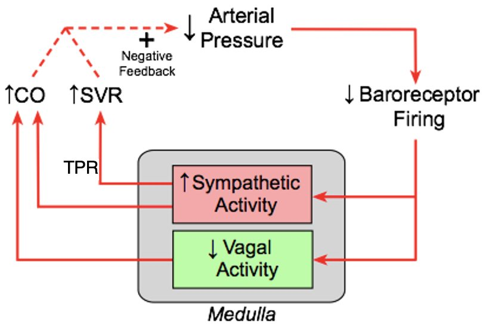
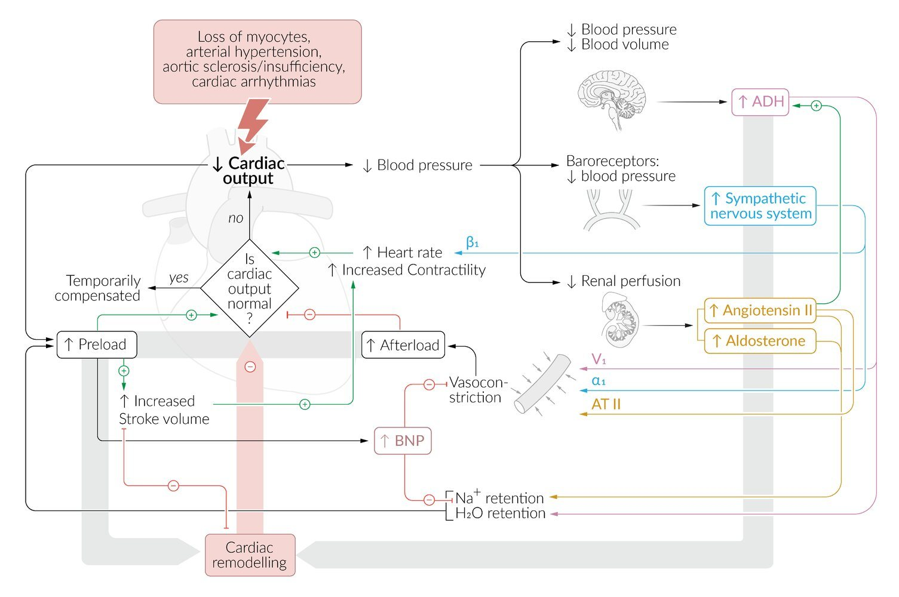
The four reflex questions from class
| Question | What happens | Answer |
|---|---|---|
| IV phenylephrine | α1 constriction raises resistance and pressure; the baroreceptors fire more; vagal output on M2 slows the SA node | Reflex bradycardia, blocked by atropine |
| What ends norepinephrine’s signal? | Mainly reuptake by the norepinephrine transporter (about 70%); MAO and COMT clear the rest | High synaptic NE acts on presynaptic α2 (Gi) to cut further release — the brake clonidine and methyldopa use |
| M2 antagonist, then IV norepinephrine | NE hits α1, α2 and β1 but not β2. Alone it gives pressure up, heart rate down (reflex). With M2 blocked, the reflex cannot act | Heart rate up and pressure up |
| Dobutamine and inamrinone together | Dobutamine is a β1 agonist; inamrinone (and milrinone) inhibit PDE3, so cAMP is not broken down | Both raise cAMP, so together they overshoot — the same shape as nitrates plus sildenafil with cGMP |
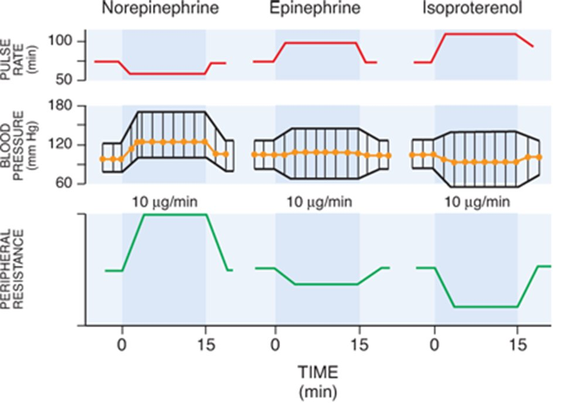
Q: A drug selectively activates β1 receptors. Besides tachycardia, what happens to plasma renin, and why?
Renin rises, because β1 receptors on the juxtaglomerular cells stimulate renin release. Beta-blockers lower renin for the same reason.
Q: A drug blocks the funny current in SA-node cells. What happens to the phase 4 slope and the heart rate?
Phase 4 flattens, so the cell takes longer to reach threshold and the heart rate slows. Board add-on Ivabradine works this way.
Q: Arteriolar radius falls by half with nothing else changing. What happens to flow through that bed?
Resistance depends on radius to the fourth power, so it rises 16-fold and flow falls to one-sixteenth.
Q: On a vascular function curve, what does the y-intercept represent, and what happens to it after a large hemorrhage?
It is the mean systemic filling pressure — the right atrial pressure when output is zero. Hemorrhage lowers the stressed volume, so the filling pressure falls, the curve shifts left, and the maximum cardiac output falls.
Q: A patient receives a rapid 2-litre saline infusion and her heart rate rises. Which reflex is this, and what else do the same receptors do?
The Bainbridge reflex: atrial stretch raises the heart rate. The same low-pressure receptors also lower renal sympathetic activity, lower ADH and raise atrial natriuretic peptide, so the kidneys excrete salt and water.
Q: A patient is given an M2 antagonist and then IV norepinephrine. What happens to heart rate and blood pressure?
Both rise. Norepinephrine alone raises pressure and slows the heart through the baroreflex. With M2 blocked, the reflex bradycardia cannot happen, so the direct β1 tachycardia shows through.
Section 6 · The ECG & Arrhythmias
Reading the ECG: Rate, Rhythm, Waves, Intervals and Axis
Opening paragraph to come
A systematic reading order ★ HY
Content to come
Waves, intervals and segments, with normal values
Content to come
Calculating the rate
Content to come
Determining the axis ★ HY
Content to come
Section 7 · The ECG & Arrhythmias
The ECG of Disease: Hypertrophy, Bundle Branch Block, Ischemia and Electrolytes
Opening paragraph to come
Atrial enlargement and ventricular hypertrophy
Content to come
Right versus left bundle branch block
Content to come
Ischemia and infarction: acute versus chronic, and the territories ★ HY
Content to come
Potassium, calcium and magnesium on the ECG ★ HY
Content to come
Section 8 · The ECG & Arrhythmias
Arrhythmias and Heart Block: Lethal Versus Non-Lethal
Opening paragraph to come
Narrow-complex tachycardias
Content to come
Wide-complex tachycardias
Content to come
Atrioventricular block: first, second and third degree ★ HY
Content to come
The lethal rhythms and what follows them ★ HY
Content to come
Palpitations and syncope: the workup
Content to come
Acute management by rhythm, stable versus unstable
Content to come
Section 9 · The ECG & Arrhythmias
Atrial Fibrillation: Risk Stratification and Management
Opening paragraph to come
Stroke risk scoring and the anticoagulation decision ★ HY
Content to come
Rate control versus rhythm control
Content to come
Section 10 · The ECG & Arrhythmias
Antiarrhythmic Drugs
Opening paragraph to come
The Vaughan Williams classes and their mechanisms ★ HY
Content to come
Adverse effects, class by class ★ HY
Content to come
Matching the drug to the rhythm
Content to come
Section 11 · Atherosclerosis & Ischemia
Arteriosclerosis Versus Atherosclerosis
Opening paragraph to come
The arteriosclerosis subtypes
Content to come
The response to vascular injury
Content to come
How a plaque progresses, and its natural history ★ HY
Content to come
Risk factors and epidemiology
Content to come
Section 12 · Atherosclerosis & Ischemia
Stable Ischemic Heart Disease Versus Acute Coronary Syndrome
Opening paragraph to come
Stable angina, unstable angina, NSTEMI and STEMI ★ HY
Content to come
Chest pain: the approach from history and exam ★ HY
Content to come
The ECG in each
Content to come
Stress testing and catheterization
Content to come
Medical management side by side
Content to come
Section 13 · Atherosclerosis & Ischemia
Cardiac Biomarkers: Troponin, BNP and NT-proBNP
Opening paragraph to come
Troponin: physiology, timing, sensitivity and specificity ★ HY
Content to come
BNP versus NT-proBNP: physiology and limitations ★ HY
Content to come
Head-to-head comparison
Content to come
Section 14 · Atherosclerosis & Ischemia
Myocardial Infarction: the Morphology and Histology Timeline
Opening paragraph to come
Gross and microscopic changes over time ★ HY
Content to come
Reperfusion injury
Content to come
Section 15 · Atherosclerosis & Ischemia
Complications After STEMI
Opening paragraph to come
Non-mechanical complications
Content to come
Mechanical complications ★ HY
Content to come
Timing tells you the complication ★ HY
Content to come
Labs, ECG and management of each
Content to come
Section 16 · Atherosclerosis & Ischemia
Ischemic Heart Disease Pharmacology
Opening paragraph to come
Nitrates, beta blockers, calcium channel blockers and ranolazine
Content to come
The acute coronary syndrome drug bundle
Content to come
Contraindications and interactions ★ HY
Content to come
Section 17 · Heart Failure & the Myocardium
Heart Failure: Reduced Versus Preserved Ejection Fraction
Opening paragraph to come
The pathophysiology of each ★ HY
Content to come
Left-sided versus right-sided signs and symptoms
Content to come
Labs and diagnostics
Content to come
Gross and microscopic pathology
Content to come
Section 18 · Heart Failure & the Myocardium
Heart Failure Pharmacology
Opening paragraph to come
Classes that lower mortality versus classes that only relieve symptoms ★ HY
Content to come
How each HFrEF drug works
Content to come
The stepwise chronic regimen
Content to come
Adverse effects and monitoring
Content to come
Section 19 · Heart Failure & the Myocardium
The Cardiomyopathies
Opening paragraph to come
Dilated, hypertrophic, restrictive and arrhythmogenic compared ★ HY
Content to come
Echocardiogram findings
Content to come
Morphology and histology
Content to come
Management
Content to come
Section 20 · Heart Failure & the Myocardium
Heart Tumors
Opening paragraph to come
Myxoma, rhabdomyoma and metastases
Content to come
Management and long-term survival
Content to come
Section 21 · Infection & Inflammation
Infective Endocarditis: Epidemiology, Pathogenesis and Organisms
Opening paragraph to come
Epidemiology and risk factors
Content to come
Pathogenesis and lesions by organ site
Content to come
Left-sided versus right-sided endocarditis ★ HY
Content to come
Which organism, in which setting ★ HY
Content to come
Culture-negative endocarditis
Content to come
Section 22 · Infection & Inflammation
Infective Endocarditis: Diagnosis and Management
Opening paragraph to come
Clinical presentation and exam signs
Content to come
Blood cultures, echocardiography and the diagnostic criteria ★ HY
Content to come
Antibiotic regimens and how they work ★ HY
Content to come
When to operate
Content to come
Section 23 · Infection & Inflammation
Myocarditis and Pericarditis
Opening paragraph to come
Endocarditis, myocarditis or pericarditis: the differential ★ HY
Content to come
Myocarditis: signs, symptoms and causes
Content to come
Pericarditis: signs, ECG and organisms
Content to come
Effusion and tamponade
Content to come
Section 24 · Valves & Surgery
Valvular Heart Disease
Opening paragraph to come
Aortic stenosis and regurgitation
Content to come
Mitral stenosis, regurgitation and prolapse
Content to come
Rheumatic heart disease
Content to come
The right-sided valves
Content to come
Section 25 · Valves & Surgery
Aortic Valve Replacement
Opening paragraph to come
Indications ★ HY
Content to come
Surgical versus transcatheter replacement
Content to come
Mechanical versus bioprosthetic valves
Content to come
Complications and their management
Content to come
Section 26 · Congenital Heart Disease
Congenital Heart Disease: Cyanotic Versus Acyanotic
Opening paragraph to come
Acyanotic lesions: the left-to-right shunts
Content to come
Cyanotic lesions: the five T’s ★ HY
Content to come
Chest X-ray signs ★ HY
Content to come
Syndromes and the lesions that go with them ★ HY
Content to come
Eisenmenger syndrome
Content to come
Section 27 · Congenital Heart Disease
Coarctation and the Newborn Murmur
Opening paragraph to come
Coarctation in the newborn: the exam findings ★ HY
Content to come
How common each structural lesion is
Content to come
What an echocardiogram is likely to show for a significant newborn murmur
Content to come
Section 28 · Vessels
Hypertension: Subtypes, Secondary Causes and Resistance
Opening paragraph to come
Subtypes and clinical contexts
Content to come
Resistant hypertension
Content to come
Secondary causes: the lab and exam clues ★ HY
Content to come
Hypertensive urgency versus emergency
Content to come
Section 29 · Vessels
Hypertension Pharmacology and Electrolyte Adverse Events
Opening paragraph to come
First-line classes and compelling indications
Content to come
Electrolyte disturbances, drug by drug ★ HY
Content to come
Section 30 · Vessels
The Dyslipidemias: Types and Pathophysiology
Opening paragraph to come
Lipoprotein metabolism
Content to come
The familial dyslipidemias ★ HY
Content to come
The dietary approach
Content to come
Section 31 · Vessels
Lipid-Lowering Drugs: Interactions and Adverse Events
Opening paragraph to come
Statins, ezetimibe, PCSK9 inhibitors, fibrates, niacin and the rest
Content to come
Drug–drug interactions ★ HY
Content to come
Preventing myopathy, liver injury and flushing
Content to come
Section 32 · Vessels
Aneurysms and Dissections
Opening paragraph to come
Definitions and gross and microscopic features
Content to come
Locations and pathogenesis
Content to come
Abdominal aortic aneurysm: screening and when to operate ★ HY
Content to come
Dissection: classification and management ★ HY
Content to come
Section 33 · Vessels
Connective Tissue Disorders of the Aorta
Opening paragraph to come
Marfan, Ehlers–Danlos, Loeys–Dietz and Turner: gene and complication ★ HY
Content to come
Section 34 · Vessels
Vasculitis
Opening paragraph to come
The immunologic mechanisms
Content to come
Large-, medium- and small-vessel classification ★ HY
Content to come
The comparison table: presentation, labs and histology ★ HY
Content to come
Life-threatening complications and their management
Content to come
Section 35 · Vessels
Peripheral Arterial Disease and Claudication
Opening paragraph to come
Vascular versus neurogenic claudication ★ HY
Content to come
The exam and the ankle–brachial index
Content to come
Aortoiliac occlusive disease
Content to come
Acute limb ischemia
Content to come
Management: exercise, smoking cessation, drugs and revascularization
Content to come
Section 36 · Vessels
Mesenteric Ischemia
Opening paragraph to come
Acute versus chronic
Content to come
Diagnosis and management ★ HY
Content to come
Section 37 · Supporting Lecture
Cardiovascular Health in Women
Opening paragraph to come
How ischemia presents differently
Content to come
Pregnancy-related cardiovascular conditions
Content to come
Reference
Objectives Still Pending
Once the sections are written, any objective that is only partly covered, or that has no lecture behind it, is listed here so nothing quietly disappears.
Part A (Sections 1–5) is written. It covers study-guide topic 1 in full (objectives 1–9) and objective 72 (diet and lifestyle in primary prevention). Parts B–H are still shells; the coverage map shows each objective’s status.
Where the sources disagree
- Atrial kick: Dr. Qazi said 20–25% of output; Dr. Morganelli said about 10% of EDV (Section 1).
- c wave timing: the recording placed it in rapid ejection; boards place it at the onset of systole (Section 1).
- S4 timing: the recording said “before S2”; it is before S1 (Section 2).
- Pulse pressure in aortic stenosis: the lecture said it varies; UWorld says narrow in severe disease (Section 3).
- Renin and ADH directions: two slips in the physiology recording (Section 5).
Still to write
- The ECG and arrhythmias (Sections 6–10), ischemia (11–16), heart failure and the myocardium (17–20), infection (21–23), valves and surgery (24–25), congenital disease (26–27), vessels (28–36), and cardiovascular health in women (37).
Reference
Glossary and Abbreviations
If a short form appears anywhere in this file, its long form is here. Each section also carries its own abbreviation strip at the top.
The cardiac cycle and pressure–volume loops
- a, c and v waves
- The three atrial pressure waves: atrial contraction, the atrioventricular valve bulging back at the onset of systole, and atrial filling against the closed valve.
- Afterload
- The load the ventricle must overcome before it can eject — mainly aortic diastolic pressure.
- Atrial kick
- The last part of ventricular filling, supplied by atrial contraction. Lost in atrial fibrillation.
- CO — cardiac output
- Stroke volume times heart rate; about 4–5 L/min at rest. The cardiac index is cardiac output divided by body surface area.
- Diastasis
- The slow middle part of ventricular filling, between rapid filling and the atrial kick. The first part of diastole to disappear when the heart rate rises.
- Dicrotic notch
- The small dip on the aortic pressure tracing at aortic valve closure.
- EDV / ESV — end-diastolic / end-systolic volume
- How full the ventricle is just before it contracts, and what is left after it ejects.
- EDPVR — end-diastolic pressure–volume relationship
- The passive filling curve on a PV loop. Steeper means a stiffer, less compliant ventricle.
- EF — ejection fraction
- Stroke volume divided by EDV; normally 55–70%.
- ESPVR — end-systolic pressure–volume relationship
- The line joining the end-systolic corners of loops at different fillings. Its slope is contractility.
- Isovolumetric (isovolumic)
- A phase with all four valves closed, so volume stays constant while pressure rises (contraction) or falls (relaxation).
- Preload
- Stretch on the ventricle before it contracts, indexed by EDV or end-diastolic pressure.
- PV loop — pressure–volume loop
- Left ventricular pressure plotted against volume for one beat.
- SV — stroke volume
- EDV minus ESV; about 70 mL.
- Wiggers diagram
- Aortic, ventricular and atrial pressures, ventricular volume, the ECG and the heart sounds on one time axis.
Heart sounds and murmurs
- A2 / P2
- The aortic and pulmonic components of the second heart sound.
- AR / AS — aortic regurgitation / stenosis
- A leaking aortic valve (diastolic murmur, wide pulse pressure) / a narrowed one (systolic murmur, gradient across the valve).
- Austin Flint murmur
- An apical diastolic rumble in severe aortic regurgitation that mimics mitral stenosis.
- Concentric / eccentric hypertrophy
- A thick wall from pressure overload / a dilated chamber from volume overload.
- HCM — hypertrophic cardiomyopathy
- A thick septum that obstructs outflow; its murmur gets louder when the ventricle is smaller.
- LBBB / RBBB — left / right bundle branch block
- Delayed conduction down one bundle branch; LBBB can give paradoxical splitting, RBBB wide splitting.
- MR / MS — mitral regurgitation / stenosis
- A leaking mitral valve (tall v wave, holosystolic murmur) / a narrowed one (diastolic gradient, rumble and opening snap).
- MVP — mitral valve prolapse
- Floppy, myxomatous leaflets that billow into the atrium; midsystolic click and late systolic murmur.
- Opening snap
- The sound of a stiff mitral valve snapping open in early diastole; a shorter S2-to-snap interval means more severe stenosis.
- Pulsus parvus et tardus
- A weak, late-peaking pulse — severe aortic stenosis.
- S1–S4
- Atrioventricular valve closure · semilunar valve closure · early-diastolic volume sound · late-diastolic stiff-ventricle sound.
- Valsalva maneuver
- Forced expiration against a closed glottis; the strain phase lowers venous return and preload.
Exercise and prevention
- ASCVD — atherosclerotic cardiovascular disease
- Coronary disease, stroke and peripheral artery disease caused by atherosclerosis.
- CR — cardiac rehabilitation
- A supervised secondary-prevention programme of exercise, education and risk-factor management. Phase II is 36 ECG-monitored sessions.
- DASH — Dietary Approaches to Stop Hypertension
- A diet rich in fruit, vegetables and low-fat dairy that lowers blood pressure, more so with less sodium.
- FITT
- Frequency, intensity, time and type — the parts of an exercise prescription.
- HF-ACTION / REHAB-HF
- The heart-failure exercise trials: HF-ACTION in reduced ejection fraction, REHAB-HF in frail older patients after an admission.
- Heart-rate reserve
- Peak heart rate minus resting heart rate.
- MET — metabolic equivalent
- The energy of resting metabolism, about 3.5 mL of oxygen per kg per minute.
- PREDIMED
- The Spanish trial showing that a Mediterranean diet with olive oil or nuts cut cardiovascular events by about 30%.
- RPE — rating of perceived exertion
- The Borg scale, 6–20; training is usually prescribed at 11–16.
- VO₂max / VO₂peak
- Oxygen uptake at maximal effort / at the point symptoms stop the test.
Receptors, signals and control of the circulation
- ACE — angiotensin-converting enzyme
- Converts angiotensin I to II and, as kininase II, breaks down bradykinin.
- ADH — antidiuretic hormone (vasopressin)
- Makes the collecting duct reabsorb water without sodium.
- Bainbridge reflex
- A rise in heart rate when the atria are stretched by extra volume.
- CVP — central venous pressure
- Pressure in the vena cava near the right atrium; the clinical stand-in for right atrial pressure.
- Funny current (If)
- The slow inward sodium current of pacemaker phase 4, switched on by hyperpolarization; its slope sets the heart rate.
- Gq / Gi / Gs
- The three G-protein pathways: Gq raises calcium through IP3, Gi lowers cAMP, Gs raises cAMP.
- MAP — mean arterial pressure
- The average arterial pressure over a cycle, about 90–95 mm Hg; equals cardiac output times total peripheral resistance.
- MLCK — myosin light-chain kinase
- The enzyme that switches smooth muscle contraction on; PKA inhibits it.
- Pmsf — mean systemic filling pressure
- The pressure throughout the circulation when flow stops, about 7–8 mm Hg, set by the stressed volume.
- PDE3 / PDE5 — phosphodiesterase 3 / 5
- Enzymes that break down cAMP (blocked by milrinone and inamrinone) and cGMP (blocked by sildenafil).
- RAAS — renin–angiotensin–aldosterone system
- The kidney’s long-term pressure and volume defence.
- Stressed / unstressed volume
- Blood that stretches the vein walls and makes pressure / blood that fills them without making pressure.
- TPR / SVR — total peripheral / systemic vascular resistance
- The resistance of the whole systemic circulation, set mostly by arteriolar radius.